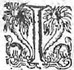
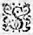
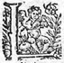

LE
NEUFIESME
LIVRE DE
LA
TROISIESME
PARTIE
DE L'ASTREE
de Messire Honoré d'Urfé.
Éd.
Éd. de 1619, 356 verso sic 354 verso.
FFLORICE finit de cette sorte les fortunes de la genereuse Cryseide, et du gentil
Arimant, laissant tous ceux qui l'avoient ouye pleins d'admiration de leur vertu. L'un estimoit Cryseide d'avoir mesprisé le sceptre et la Couronne de Rithimer et de Gondebaut pour se conserver à son fidele Arimant : L'autre admiroit les resolutions d'Arimant à s'offrir à une volontaire mort : mais tous d'un commun consentement loüoient la fidelité et l'affection de Bellaris. Un seul
Hylas se moquoit de tous trois, et de tous ceux qui ayans ouy le discours de Florice
appreuvoientapreuvoient
toutes ces choses. - N'est-ce pas, disoit-il en branlant la teste, la plus entiere folie qui fut jamais, que celle de tous trois ? Cryseide par sa sottise au lieu de Royne, demeure simple fille dans son pays : Arimant par sa folie s'opiniastre à la recherche de cette Cryseide, perd son temps, est blessé, est conduitsconduit prisonnier, et enfin apres tant de peinepeines et d'extremes perils, le voilà prest à finir honteusement ses jours, si la Fortune ne se fust lassée de le tourmenter, et si le Roy Gondebaut ne se fust monstré plus courtois et religieux de sa parole, que l'un et l'autre n'estoit fol : Et le bon est que le pauvre Bellaris qui n'en pouvoit pas mais, faillit de payer pour tous. Et ne valoit-il pas mieux que sans se donner tant de peine les uns aux autres, Cryseide fust Royne des Bourguignons, puis que possedant le cœur de Gondebaut, elle eust pu avec le temps, et avec la prudence donner à son Arimant toute la satisfaction qu'il eust sçeu desirer ? Mais, Silvandre, sçais-tu bien d'où tout leur malheur, et toutes leurs peines sont procedeeprocedent s ? de cestecette seule sottise que tu nommes Constance : elle seule les a tourmentez tant d'annees, elle seule a failli de les conduire si honteusement au supplice, et enfin elle seule les a faict estre le joüet de la fortune et du hazard. Silvandre s'oyant nommer s'approcha ded' Hylas, et apres luy respondit froidement : - Toutes ces choses que tu racontes, Hylas, sont veritablement des effects de cestecette Constance que tu blasmes, et d'autant plus estimables, qu'ils sont accompagnez de peines et de dangers : Ce ne sont que les courages genereux qui mesprisent
" les commoditez et les incommoditez, pour
" ne se dementir de leur devoir, et pour parvenir
" à l'accomplissement de leurs desseins. - Ce ne sont,
" ditdict
Hylas, que les esprits peu sages qui courent
" apres l'ombre du bien, et laissent le bien mesme.
" Arimant n'est-il pas bien obligé à cestecette constance, qui jeune l'a engagé au service de Cryseide, et vieux par apres la luy a donnee ? c'est donner à un cheminchien
qui n'a point de dents un os qui est bien dur à rongerη
. N'eust-il pas mieux valu pour ce gentil
Chevalier, qu'il fust demeuré dans Eporede, pour la consolation de ce pauvre pere qui l'aimoit, que non pas le faire mourir de douleur, ou pour le moins rendre ses vieux jours si pleins de tristesse et d'infortunes, que la mort luy devoit estre plus agreable ? Et pour le propre
contentement qu'Arimant eust pu avoir, penses-tu que dans toute la ville il n'y eust point de fille que Cryseide ? Hé, Silvandre mon amy, quelle folie est celle-là de vouloir perdre son temps, et son repos pour une marchandise si peu rare qu'une fille ? S'il eust suivy mes loix deslors que tant de difficultez s'opposerent à ses desirs, il les eust sagement tournez ailleurs, et se fust adressé à quelqu'autre, de laquelle la conqueste n'eust pas esté si penible, et si peu utile. Chacun se mit à rire des propos d'Hylas. Et Tircis prenant la parole : - Je voy bien, luiluy dit-il, Hylas, que tu ne seras jamais celuy qui feras bastir un Templeη
à la Fortune, parce que mal-aisément en auras-tu jamais affaire. - Et moy, ditdict
Hylas, je voy bien que tu seras celuy que les vieilles et mal-faitesfaictes adoreront. - Et
pourquoy ? demanda TyrcisTyrcir. - Parce, respondit Hylas, que pour convier leurs Amants à les servir laides et ridees, elles te proposeront comme un Dieu, toy dis-je, qui és si hors du sens, que de t'opiniastreropiniatrer à aimer ce qui n'est plus. - Tu és inhumain, Hylas, de representer à l'affligé avec des reproches, le sujectsujet qu'il a de tristesse. Mais soit ainsi que je sois estimé de ces vieilles desquelles tu parles, et proposé comme un Dieu : hé, mon amy, quel mal y a-t'il en cela pour moy ? ne vaut-il pas mieux estre creu un Dieu, que d'estre tenu pour inconstant ? Et quoy, Hylas, les autels et les sacrifices ne sont-il pas agreables aux Dieux mesmes que nous adorons ? Et pourquoy les hommes les refuseront-ils ? - Et penses-tu, Tyrcis, respondit Hylas, que je n'aye pas à l'avenir aussi bien des autels et des sacrifices que toy ! Si auray pour certainη , car je me veux rendre plus adorable que toy : Mais il n'y aura que cette difference que tu seras le Dieu des vieilles et des laides, et moy celuy des jeunes et des belles : et par ainsi les sacrifices qui te seront faitsfaicts , seront rances et chassieuzchassieux, et les miens jeunes et beaux : Aux tiens l'on ne verra que des anciennes matrones, qui yront toutes acroupiesη , appuyeesapuyées sur leurs petits bastons, avec la teste et les mains tremblantes : mais aux miens l'on n'y trouvera que des plusη jeunes et plus jolies pucelles de toute la contree : de sorte que je cours fortune d'estre estimé avec le temps, le Dieu de plaisir, de la joye, et de la vie : et toy, celuy de l'ennuy, de la tristesse, et de la mort. Or dy moy à cette heure, sans passion,
lequel de ces deux sacrifices te semble le plus agreable, ou le plus estimable ?
Tircis vouloit respondre, lors que la venerable Chrisante ayant esté advertie, qu'Adamas passoit avec toute ceste troupe si prez d'elle, les vint rencontrer aupres du bois, qui touchoit le pré du temple d'Astree, et par sa venuë interrompit leurs discours, parce que le Druyde s'avança pour la saluër, et appellant Alexis, la luy presenta comme sa fille. La venerable Chrisante la baisa en la jouë, l'embrassa avec un extreme contentement, et les vierges Druydes en firent de mesme, non point sans admirer sa beauté et sa bonne grace. Cependant la venerable Druyde s'adressant à Adamas et à Galathée
η
, les supplia de ne la croire point avec si peu de civilité, ny de cognoissance de son devoir, que si elle eust peupu elle ne fust allée avec toutes ces bergeres, lui offrir toute sorte de service, et se resjouyrresjouïr du retour de sa chere fille, mais que le commandement qu'Amasis lui avoit faictfait de l'attendre, luy avoit faict perdre ce contentement, - Ce que je regrette grandement, continua-t'elle, car elle n'est point venuë, et à ce que je vois j'eusse bien eu le loisir de retourner, puis qu'elle ne sera pas icy si tost qu'elle pensoit, pour l'accident qui est arrivé depuis : - Et qu'est-ce, dit Adamas, qu'il y a de nouveau ? - Je pensois, reprit la venerable Chrisante, que vous en fussiez adverty : Il faut que vous sçachiez qu'Argantée a esté tué en la presence de Galathée et de Polemas, par un Chevalier estranger, et quequi
sur la fin du combat, l'un des Lyonsη
qui gardent la fontaineη
enchantee, cherchant à manger, est venu sur le mesme lieu, et a donné tant de frayeur aux chevaux qui estoient attellezattelez aux chariotchariots de Galathée, et de ses NymphesNimphes, que les emportant auà travers
desles champs, les uns se sont rompus et les autres gastez,
de sorte qu'elle qui de fortune avoit mis pied à terre pour voir mieuxη
ou pour separer ce combat, fut contrainte de s'en aller à pied jusques à Mont-verdun, où elle a sejourné, tant pour attendre ses chariots, que la guerison du Chevalier qui a tué Argantee, et y est encores comme je croy.
Cependant qu'ils parloient ainsi, ils furent interrompus par la veuë du jeune Lerindas, messager de Galathee, qui s'addressantadressant au sage
Druyde, - Mon pere, luy dit-il, la Nymphe vous mande qu'elle desire d'assister au sacrifice que vous devez faire pour le remerciement du Guy, et craignant d'y arriver trop tard, elle vous prie de l'attendre, et de luy mander en quel lieu vous le ferez. Adamas oyant ce message demeura un peu surpris, parce que se souvenant que Galathee avoit desja veuη
Celadon vestu en fille, ce n'estoit pas sans raison, s' il craignoit
qu'elle le recogneust revestu en fille Druyde : Toutesfois ne voulansvoulant donner cognoissance de la doute où il en estoitη
, il respondit froidement : - Amy, tu diras à la Nymphe que je serois extremement aise d'obeyrobeïr à ce qu'elle me commande, mais que le temps est si court, qu'il m'est impossible de luy donner le loisir de s'y trouver : Je sçay qu'elle ne voudroit pas que le service de Tautates
fustfut retardé, et que toutes choses estans prestes, et
l'assemblée de tant de Bergers et Bergeres, qui sont desja attendantsη sur le lieu, il m'est du tout impossible de remettre le sacrifice en un autre temps, sans un grand desordre et un tres-grand scandale : mais que s'il luy plaist de voir ces belles et discrettes Bergeres, je promets de les luy mener toutes dans deux ou trois jours à Mont-verdun, ce que je dis pour croire que la volonté qu'elle a d'assister à ce sacrifice, n'est que pour le desir qu'elle a de les veoir toutes ensemble. - Je vous asseure, mon pere, dit le jeune Lerindas, que je pense que vous avez deviné, car à ce que je luy ay ouy dire, elle avoit envie de prendre ceste occasion, pour voir si lesces bergeres de Lignon, sont aussi belles que je luy ay fait entendre : - Je l'ay bien jugé ainsi, dit Adamas, parce que le sacrifice que nous allons faire n'est pas tel qu'il la puisse convier d'y assister, n'estant qu'un petit remerciementremerciment que ces Bergeresbergers font, attendant que le sixiesme de la lune de Juilletη ils fassent le sacrifice solemnel en cueillant le Guy, et auquel alors ils prendront la hardiesse de la supplier de vouloir leur faire l'honneur d'y assister : Tu luy diras donc, Lerindas, que la briefveté du temps et le peu solemnel sacrifice que nous allons faire, luy doitη oster la volonté d'y venir, et que toutes ces belles Bergeres ne me dédiront pas de ce que je t'luy ay promis. Astree alors prenant la parole, - Je m'asseure mon pere, dit-elle, que nulle de nous ne vous dédira jamais, et principalement pour aller rendre un devoir, auquel la nature et nostre naissance nous obligeη . - Vous avez raison Astree, reprit le messager,
de respondre pour toutes, car je croy que vous et Diane, estes les deux qu'elle desire le plus de voir, mais vous sur toutes : - Si nous eussions pensé, adjousta Diane, que nos noms eussent esté si heureux que d'estre cogneus d'une si grande Nymphe, il y a long temps que nous eussions satisfait à ce devoir : - Vos noms, et vos beautez, dit Lerindas, ne se peuvent cacher dans ces bois solitaires, et j'avouë que je pense avoir esté en partie cause du desir qu'elle a de vous voir, luy ayant dit ce que j'en ay veu : - Elle vous croira pour homme qui se cognoist peu en beauté, dit la Bergere, lors qu'elle verra le contraire, de ce que pour nous advantager, vous luy aurez dit de nous : - Je crains plustost, repliqua-t'iltil , qu'elle ne m'accuse de deffaut que d'excez, en ce que je luy en ay raconté, et parce que je sçay qu'elle m'attend avec impatience je m'en vay luy dire de vos nouvelles, et luy jurer avec verité, qu'elle peut bien faire cacher toutes ses Nymphes lors que vous arrivezarriverez , si elles ne veulent qu'elles rougissent de honte et meurent d'envie. Leonide qui estoit aupres de Daphnide, oyant ces dernieres paroles et feignant d'en estre offencée, - Et quoy, Lerindas, est-ce ainsi que vous traittez mes compagnes ? Je vous jure, dit-elle, que je le leur raconteray : - Si vous le faites, respondit-il, vous leur ferez double desplaisir : L'un, de leur faire paroistre qu'elles ne sont guere belles, et l'autre d'ouyr une reproche qui les offence, et de laquelle avec raison elles ne se peuvent plaindre. Et à ce mot, sans attendre autre response, il s'en alla courant du costé de
Mont-verdun. Et Adamas craignant encores que Galathee vint au sacrifice, afin de le faire plus promptement, se licentia de la venerable ChrysanteChrisante, qui eust bien voulu y assister, n'eust esté qu'elle craignoit qu'Amasis ou Galathee ne vinssent
cependant à Bon-lieu.
Peu apres toute ceste troupe arriva dans le petit pré, qui estoit devant l'entree du temple d'Astree, où se trouva une tres-grande assemblee de Pasteurs, de bergers, et de bergeres, avec les Vacies, Eubages, Bardes, Sarronides, et Druydes des lieux circonvoisins, et desja toutes les choses prestes, qui estoient necessaires au sacrifice. Entre les pasteurs qui s'y estoient assemblez, le prudentη
Phocion, et le sage Diamis estoient recommandables pour leur venerable vieillesse, Amintor aussi neveuη
de Phillidas, s'y trouva, et de fortune
Daphnis, la chere amie de Diane, estant le soir auparavant arrivee avec Calliree
η
ne voulut faillir de s'y trouver, tant pour assister à ce sacrifice, que pour voir tant plustost sa chere compagne, de laquelle elle avoit demeuré fort long temps absente.
D'aussi loing qu'elles se recogneurent, laissans toute la compagnie, elles coururent les bras ouverts, et s'embrasserent avec un si grand contentement, qu'elles firent bien paroistre l'absenceη
n'avoir eu guere de pouvoir sur l'affectionη
qu'elles se portoient, et apres s'estre quelque temps tenuës de ceste sorte, et apres s'estre reprises par deux ou trois fois, Astree et Phillis, qui survindrent les contraignirent de se separer, afin de participer aux caresses qu'elles se faisoient : - Voyez, ma compagne, luy dit Diane, ce que j'ay acquis depuis
que vous ne m'avez veuë, voicy deux autres Daphnis
η
que j'aime comme ma vie, et que je veux que vous aimiez aussi, estant tres-asseuree que pour vos merites, et pour l'amour de moy, elles vous aimeront comme vous m'aimez. Alors Astree et Diane reconfirmant ceste asseurance par cent protestations d'amitié, et Daphnis la recevant d'un semblable cœur qu'elle luy estoit offerte, elles contracterent une société entre elles, qui jamais depuis ne se separa.
Cependant, Adamas
curieux de sçavoir si tout ce qui estoit necessaire pour le sacrifice estoit prest, trouva que les Vacies avoient esté soigneux de preparer tout ce qu'il falloit. De sorte qu'apres s'estre lavé et les mains, et le visage, dans la fontaine qui estoit à l'entrée du templeη
de l'Amitié, et s'estant revestu de blanc, et couronné de verveine, et luy et les Vacies, Eubages, Sarronides, et autres ordonnez pour le sacrifice, ils se chargerent tous des choses avec lesquelles on vouloit sacrifier. Le sage Adamas portoit en sa main le rameauη
du Guy, qui avoit esté cueilly l'annee auparavant. L'un des Vacies portoit la serpe d'or, avec laquelle ce Guy avoit esté coupécouppé , un autre le linge blanc, dans lequel il avoit esté recueilly, un autre avoit entre ses bras un faisseau de Sabine,
et un autre de Verveine, apres les deux qui portoient le pain et le vin qu'ils devoient sacrifier, et enfinen fin deux Taureaux blancs, couronnez de Sabine, et de Verveine, et couverts de fleurs presque par tout le corps,
estoient conduits par huict Victimaires
couronnez aussi, et ceinturez de Verveine et de Sabine.
Le sage Adamas, toutes ces choses ainsi preparees, et les faisant toutes passer d'ordre devant luy, venoit avec une gravité digne de celle de grand Druyde comme il estoit, et faisant trois tours, suivy de tout le reste des Bergers et des Bergeres à l'entour du pré sacré, vint poser avec un grand respect le Guy sur un Autel qui estoit dressé au pied du Chesne bien-heureux, sur lequel le nouveau Guy se voyoit, et autant en firent ceux qui estoient chargez des choses que nousη
avons racontées.
Ce lieuη
estoit celuy où le Temple d'Astree avoit esté faictfait de petits arbres pliez les uns sur les autres en facon de tonne par le Berger de
Celadon :
Et parce que pour y parvenir il falloit passer par le Temple de l'Amitié,
ainsi que nous avons ditη
, plusieurs de ceux qui suivoient le sacrifice, furent contraints de s'y arrester, pour estre le Temple d'Astree trop petit pour tenir
une si grande troupe : et d'autant plus que les deux taureaux et les huict Victimaires
tenoient une grande place : Et toutefois Adamas fut contraint d'y faire le sacrifice, parce que l'arbre où estoit le Guy portoit presque toute la tonne de ce Temple, et il falloit selon la coustume, que le remerciement se fist au pied de l'arbre ainsi favorisé du Ciel.
Apres que le grand Druyde eust faict ranger tous les sacrificateurs, et qu'il vit tout le peuple en devotion, faisant apporter un grand
brazier allumé dans un Vaze d'argent, et le posant sur l'Autel, il prit trois fueilles de Guy, trois petits brins de Verveine, et autant de Sabine, et les jettant dans le feu, il dit en tenant le coinη
de l'Autel.
- C'est à toyη
,
ô grand Hesus, Bellenus, Tharamis, que ce peuple devot rend graces du present que tu luy fais de ton Guy salutaire, et c'est à toy comme à son seul Tautates, que dans ce bois sacré il offre en sacrifice de remerciement le pain et le vin que je te presente, ensemble le sang et la vie de ces Taureaux blancs : L'un, pour tesmoignage que c'est de toy de qui nous recognoissons la conservation de nos vies : Et l'autre pour monstrer la sincerité avec laquelle nous t'adorons et te consacrons les plus pures et plus entieres victimes
que nous ayons. Comme Hesus, rends les courages si hardis, et les bras si forts de nos Chevaliers, et de nos Solduriers, qu'ils puissent non seulement nous defendre de nos ennemis, mais en obtenir tousjours la victoire. Comme Bellenus sois le Dieu des hommes et les conserve pour en estre serviservy et adoré ; Comme Tharamis nettoye nous, et nous purge de nos fautes : Et en fin comme Tautates sois tousjours nostre seul et unique Dieu, en nous renvoyant cestecette Deesse Astree
η
par la presence de laquelle nous esperons toute sorte de benedictions.
A ce mot il jette dans le feu un peu dedu pain et dedu vin, et fit signe aux Victimaires de frapper, lesquels selon la coustume demanderent à haute voix, - Ferons-nous ? Et leur ayant respondu,
qu'il estoit temps : deux avec les maillets les frapperent sur la teste, et deux en mesme temps les esgorgerent. Deux receurent le sang dans des vazesvases , et deux leur tenoyenttenoient les jambes, de peur qu'en debattant elles ne blessassent les Victimaires. En fin les Vacies les faisant emporter dans le pré sacré, les ouvrirent, visiterent les entrailles, et les trouverent entieres, et de bon augureη
: dequoy tous joyeux et contents, ils
il
vindrent faire leur raportrapport au Grand Druyde devant toute l'assemblee, laquelle apres que l'Autel eut esté arrosé du sang, et qu'il en eut esté jetté un peu dans le brazier, remercia le Grand Tautates d'avoir eu agreable ce sacrifice et leur remerciement, le suppliant de ne se vouloir point lasser de leur faire tousjours de nouvelles graces. Et le signe de la fin du sacrifice estant faict, chacun plein de joye et de contentement, *
la plus grande partie des vieux bergers
se retira en son hameau.
Cependant les victimes estans mises en pieces, et le feu en ayant consommé une partie selon la coustume, le reste fut cuit et mangé tant par les Vacies, et autres sacrificateurs, que par les Bergers qui se voulurent mettre en leur trouppe, ne demeurant dans le temple d'Astree qu'Adamas, avec Daphnide, Alcidon, et les Bergers et Bergeres qui estoient venus de compagnie. Et parce que Daphnide qui estoit accoustumee de voir faire les sacrifices à la façon des Romains, estoit curieuse de sçavoir pourquoy l'on usoit en cette contree d'autres ceremonies : - Madame, luy dit-il, encore que cette contrée
des Segusiens que nous appellons F O R E T S, soit en son estenduëη
des plus petites de la Gaule, si est-ce que le Grand Dieu monstre d'en avoir un plus grand soing que des autres : car sans parler des autres, les Galoligures, qui est cestecette contree que communement l'on nomme à
cette
ceste heure la Province des Romains, d'autant qu'elle a eu une si grande afinité avec les Romains, et que ses principales villes sont colonies des Focenses peuples Grecs, et adonnez à la pluralité des Dieux, encores que dés le commencement, comme Gaulois, ils n'eussent que la religion de nos peres, toutefois ainsi que l'abus peu à peu se va coulant en toutes chosestoute chose , de mesme ont-ils laissé glisser parmyparmi leurs ceremonies et leurs sacrifices les fausses et idolatres opinions de ces divers peuples, et ont faictfait un meslange de la Religion des Gaulois, des Romains, et des Grecs, qui les rend non seulement differents de l'ancienne, mais aussi de toutes les autres desquelles elle a esté corrompuë : Au contraire, cette petite contree de FORETS n'ayant jamais eu communicationη
avec les peuples estrangers, sinon avec quelques Romains, a esté plus soigneuse que je ne vous sçaurois dire, de conserver entiere et pure celleη
qu'elle a receuë de ces vieux, qui apres avoir longuement flotté sur les eauxη
,
et qui à cette occasion furent nommez Gaulois, vindrent descendre par l'Ocean Armorique, et apporterent la vraye et pure religion qu'ils avoient apprise de ce grand amyη
de Tautates, qui seul avec sa famille fut sauvé de l'innondation universelle. Or celuiceluy -cy leur avoit enseigné qu'il n'y avoit qu'un seul
Dieu qu'il nommoit Tautates, et lequel par des surnoms il appelloit quelquefois Hesus, c'est à dire dieu fort et puissant, *
Belenus, c'est-à-dire dieu-homme, parce qu'il n'y a de toutes les creatures mortelles que l'homme seulη
qui le recognoisse, ou peut-estre pour un mystere caché de la naissance d'un homme-dieu. Tharamis, c'est à dire, Dieu repurgeant et nettoyant les fautes des vivans et cestecette
croyancecreance
a tousjours esté conservee pure entre nous jusques en ce temps, et peut-estre nous pouvons nous vanter d'estre le seul peuple des Gaules qui aytait eu ce bon-heur : car les uns par force, les autres de bonne volonté, et par la communication qu'ils ont euë les uns des Romains, les autres des Vissigots, les autres des Vandales, Alains, Pictes et Bourguignons, ont perdu cestecette puretéη
que nous avons tousjours retenuë et en nostre croyance et en nos sacrifices.
Cependant qu'Adamas parloit de ceste sorte avec Daphnide et Alcidon, leur descouvrant les plus secrets mysteres de sa religion, Astree tenantη
sous les bras
Alexis, luy alloit monstrant toutes les raretez de ce temple, qu'elleη
avoit veuës avant que la bergere, et que toutefois elle feignoit d'admirer : Et mesme quand Philis luy dit, que ce temple avoit esté faictfait d'une main incognuëincogneuë , et qu'il n'y avoit berger en toute la contree, qui sçeut celuy qui y avoit travaillé. - Si est-ce, respondit Alexis, que cest œuvre n'est pas le travail d'un jour : - Et toutefois, respondit Astree, jamais personne ne s'en est pris garde, qu'il n'aytait esté parachevé comme vous le voyez : - Mais
Madame, continua-t'elle, dittesdites -moy je vous supplie, estes vous de la mesme opinion que nous sommes, considerez un peu la peinture de la Deesse Astree, à qui diriez vous qu'elle ressemble ? - A la plus belle bergere du monde, respondit Alexis : - Vous n'estes donc pas, reprit Astree, de l'opinion de nous toutes, car ces bergeres m'asseurent, et quant à moy il me semble qu'elles ont bien quelque raison, que ce visage a beaucoup du mien : - Il est tres-certain, repliqua Alexis, et je le dis bien aussi comme vous, car il est vray que ce portraitportraict semble avoir esté pris sur vostre visage, et que cela ne vous empesche pas d'estre la plus belle bergere du monde : - Je reçois ceste loüange de la bouche d'Alexis, ditdict Astree, parce que je desire d'estre telle qu'elle me dict, pour luy pouvoir estre agreable, et qu'elle n'estant pas bergere, mais Druyde, je ne pense luy faire point de tort en l'acceptant. - Quand je serois bergere, respondit Alexis, vous ne devriez faire de difficulté de la recevoir, puis qu'elle vous est si bien deuë, et que quand vous en feriez quelque difficulté par un excez de modestie, enfin la raison vous y contraindroit, par le jugement de tous. Mais, belle bergere, ne parlons pas d'advantageavantage d'une chose que personne ne peut nier, et voyons je vous supplie ce qui est sur cét Autel, que je croy vous avoir esté dressé par les Pans et EgypansEgipans de cette contree, soubssous le nom de la Deesse Astree. La bergere oyant parler de cette sorte Alexis, demeuroit encore plus ravie que de coustume, car il luy sembloit d'ouyr tout à faictfait parler
Celadon quand il luy tenoit de semblables discours, et cestecette ressemblance luy donnoit tant de contentement, qu'elle ne le pouvoit cacher à ses compagnes : Et en mesme temps qu'elles s'approcherent de l'Autel, Diane et Phylis en firent de mesme, ayans avec elles Daphnis, qui estonnée de ce que ses compagnes luy disoient de ce lieu, alloit avec elles considerant tout ce qui y estoit : et de fortune Diane jettant la main sur l'un des petits rouleaux de papier, dont il y enη avoit quantité sur l'Autel, et le desployant elles trouverent qu'il y avoit de tels vers.
Enfer d'Amour.

QUel enfer plein de rigueurA des peines plus cruelles,
Que celles que dans le cœur
Je sens pour vous eternelles ?
Les tenebres, les fureurs,
Les fers, les feux, les horreurs :
Bref, toute chose establie
Pour le tourment de là bas,
Si ce n'est que je n'ay pas
Cette eauη qui faict qu'on oublie.
Diane qui tenoit le papier, et qui le laissoit lire à Philis et Astree, - Il me semble, ma sœur, luy dit-elle, que je cognois cetteceste escriture : - Elle est de Celadon, respondit Philis, et je vous asseure que j'entre en la plus grande resverie du monde, quand je vois ce qui est en ce lieu. Astree rougit oyant nommer Celadon, mais plus encores Alexis, qui toutefoistoutesfois pour mieux se déguiser, luy demanda, - Et qui est ce Celadon duquel vous parlez ? - C'est, dit Diane, ou pour mieux dire, c'estoit le plus gentil berger de toute ceste contree, et qui par mal-heur se noya : - En quel lieu ? adjousta Alexis, et comment ? - Ce fut, interrompit Astree, dans le mal-heureux Lignon : Mais parlons d'autre chose, et voyons ces autres rouleaux. Et prenant d'entre les mains de Daphnis celuy qu'elle commençoit de desployer, elle trouva que c'estoient des vers, et toutefoistoutesfois escrits d'une autre main : et parce que le caractere estoit assez difficile, elle les remit à Diane, qui les leut tout haut, Ils estoient tels.

ATtaintη
jusques au cœur d'outrage et de desdaindédain ,
Pendant que Celadon alloit faisant lasa plainte
Qu'il avoit si long temps en son ame contrainte,
Une Nymphe grava ces regrets de sa main,
Si ce gentil berger arrousant son beau sein
De ses pleurs les temoingstesmoins d'une amitiéη
non feinte,
Celleη
dont il se deult, de pitié n'est atteinte,
Qu'Amour ses feux esteigne, il les allume en vain.
Celle qui le verra, sans aymer ce visage,
D'une Tygreη cruelle auradura bien le courage
Mais s'il en est Amant, sans qu'aussi-tost aprezapres
Elle n'aille bruslant d'une seconde flame,
Outre qu'elle a sans doubtedoute , un rocher pour uneun' ame,
Il faut croire qu'Amour n'a ny flames ny traictstraits .
D'une Tygreη cruelle auradura bien le courage
Mais s'il en est Amant, sans qu'aussi-tost aprezapres
Elle n'aille bruslant d'une seconde flame,
Outre qu'elle a sans doubtedoute , un rocher pour uneun' ame,
Il faut croire qu'Amour n'a ny flames ny traictstraits .
Ces vers avoient esté escrits par la NympheNimphe
Leonide, lors que ne pouvant persuader à Celadon, de laisser la triste vie qu'il passoit en ce lieu, elle le venoit visiterη
presque tous les jours, et parce qu'elle ne pouvoit chasser de son ame la passion qu'elle avoit pour luy, esmeuë de pitié de le voir en cest estat, elle escrivit ces vers, pour tesmoignage du resentimentressentiment qu'elle en avoit.
Lors que Philis ouyt le nom de Celadon, - Pour certain, dit-elle, c'est bien icy le lieu des merveilles, car il ne faut point douter que tout ce qui est icy, ne soit fait pour Celadon, et toutefoistoutesfois nous sçavons bien qu'il est mort : - Et comment le sçavez-vous ? adjousta Alexis, Astree l'interrompant, - Il n'en faut point doubterdouter , dit-elle, je l'ay veu mourir, et depuis quelque temps apres, j'ay veu son esprit. Mais mon Dieu ma compagne, continua-t'elle, laissons le en repos : Et lors s'en voulant aller, Diane la retint, en luy disant, - Les vers que je viens de lire sont escrits d'une autre main,
mais voyez ce qui est dans ce papier, si je ne me trompe, ce sont les mesmes caracteres que les premiers, et lors elles leurent toutes ensemble telles paroles.
I.

SOuspirs enfans de cestecette pensee qui sans cesse me tourmente, comment par vostre violence n'esteignez-vous le feu de mon ame, ou comment ne l'allumez-vous de telle sorte qu'il me puisse consumer entierement ?
II.
Souspirs, qui soulez estre le soulagement de celuy de qui la douleur vous conçoit, pourquoy à mon dommage changez vous cestecette
coustumeconstance , rengregeant les cruels desplaisirs qui me tourmentent ?
III.
Souspirs, si vous sortez du profond de mon cœur, avec une si grande peine, pourquoy ne l'emportez-vous plustost où vous allez, afin de me donner ou la mort en me lale ravissantη
,
ou la vie en la portant au lieu où est la source de ma vie ?
IIII.
Souspirs, puis que c'est mon cœur qui vous
donne naissance, et que l'Amour est celuy qui vous envoye vers celle où vous allez, pourquoy ne m'en rapportez-vous des nouvelles, afin de conserver la vie de celuy de qui vous naissez ?
V.
Souspirs,
qui naissiez autrefois dans l'excez de mon contentement, comment prenez-vous à
cette
ceste heure naissance dans le plus fort accez de mes desplaisirs ?
VI.
Souspirs, les tesmoingsη
d'une ame qui desire,
comment sortez-vous de mon cœur, puis que tous mes espoirs estans perdus, tous mes desirs doivent estre estouffez ?
Mal-aysémentaisément ces belles bergeres eussent peupu laisser un seul de ces rouleaux qui estoient sur les autels, sans les desployer et les lire, si Adamas qui alloit declarantη à Daphnide et à Alcidon les secrets du temple de l'Amitié, et de celuy de la Deesse Astree ne les eust interrompues. Elles donc pour luy faire place sortirent hors de ce lieu, et encores que personne de la trouppetroupe n'en peust sçavoir plus de nouvelles qu'Alexis, si est-ce qu'il n'y en avoit pas une qui enη fistfit plus l'estonnee, leur demandant fort curieusement toutes les moindres choses qu'elle y voyoit. Estans sorties elles trouverent Hylas prezpres de la fontaine, qui s'y estoit assis pour ne vouloir non plus entrer dedans ce temple à cette fois qu'à la premiereη .
D'abord qu'Alexis le vit, ne sçachant pourquoy il ne les avoit suivies : - Et que faictesfaites -vous icy, mon serviteur, luy dit-elle, cependant que nous venons de voir le plus beau lieu qui soit en cestecette contree ? - Ma Maistresse, respondit-il, j'ay pensé que je vous donnerois plus de desir de me revoir, quand je vous priverois pour quelque temps de ma veuë :η - Il ne faut point, repliqua t'elle, que vous usiez de cet artfice, car je ne sçaurois le desirer plus que je fais continuellement :η - Si cela estoit, reprit Hylas, vous fussiez demeuree icy aupres de moy, et n'eussiez pas preferé la curiosité de visiter ce lieu champestre, au contentement que vous pouviez recevoir d'estre aupres d'Hylas :η - Je pensois adjousta Alexis en sousriant, que mon serviteur estoit si religieux envers sesces deitez bocageresboscageres , qu'il seroit des premiers et des plus avancez auprezaupres de leurs autels, et le croyant desja bien avant dedans ce temple, je l'y suis allerallé chercher : - Si vous ne me cediez point autant en affection dit Hylas, que vous me devancez en merite, vous eussiez bien pris garde que j'estois demeuré à la porte, puis que j'ay bien veu quand vous estes entree dedans : - Et vous mon serviteur, dit incontinent la Druyde, ne me permettez vous pas de vous reprocher, que si vous aviez autant de bonne volonté pour moy que j'en ay pour vous, puis que vous avez veu que j'allois dans ce lieu sacré, vous m'y eussiez suivie, comme tres-volontiers je me fusse arrestee icy, si j'eusse pensé que vous y fussiez demeuré ? - cesteCette reproche n'est pas raisonnable, respondit Hylas, que sçay-je
si le Dieu à qui ce bois est consacré, a agreable que j'y entre, ne voyez vous pas ce qui est escrit sur cestecette porte ? Alors Alexis feignant de n'y avoir encore pritpris garde, elle y tourna les yeux, et vit en escrit.
Loing, bien loing, prophanes espritsη
,
Qui n'est d'un sainct Amour espris,
En ce lieu sainct ne fasse entree :
Voicy le bois où chaque jour
Un cœur qui ne vit que d'Amour
Adore la Deesse ASTREE.
- Et que voulez-vous dire par là ? continua Alexis : - Il veut dire, interrompit Silvandre, que n'estant point espris d'un sainct Amour, il n'ose mettre le pied en ce lieu sacré, de peur de le prophaner ; et en cela, Madame, il se monstre plus religieux que parfaict Amant : - Est-il possible, mon serviteur, reprit Alexis, que Silvandre ait ditdict la verité ? - Ma maistresse respondit Hylas tout en colere, avez vous envie que je vous ayme plus que je n'ay faitfaict jusques icy ? - J'en serois bien aise, ditdict Alexis : - Esloignez donc de vous, dit-il, de ces broüillonsη d'Amour, car tel peut-on bien nommer ce berger, qui nous vient embroüillant l'esprit par ses resveriesréveries. Chacun se mit à rire de la cholerecolere de Hylas, et luy sans s'arrester aux autres, se tournant vers Silvandre, - Penses-tu que je ne sois point entré, ditdict -il dans ce bois, pour estre plus religieux que parfaictparfait Amant ? - Lequel ;
respondit Silvandre, veux-tu que je croye ? - Lequel que tu voudras, repliqua Hylas :η
- Or je diray donc, reprit Silvandre, que non point pour estre religieux, mais pour avoir peur du chastiment, tu n'as osé entrer en ce lieu sacré, non plus à ce coup que la premiereη
fois que nous y fusmes. - Je ne veux pas desavoüer, respondit Hylas, que je ne craigne la main d'un Dieu courroucé : mais je dy bien, que quand cela seroit, ma crainte est plus estimable que ton outrecuidance : car ne sçais-tu pas qu'il n'y a personne qui ne soit atteinteattainte de quelque
imperfection de l'humanité ? He mon amy, "
pensepenses -tu
estre si parfaict, qu'il n'y ait "
point de soüilleure en toy ? Et cela estant, avec "
quelle effronterie oses-tu mettre le pied dans ce lieu deffendu ? - Je confesse, respondit Silvandre, que ce que tu dis de l'imperfection humaine est en moy, mais non pour cela en toutes les autres personnes qui vivent, estant tres-asseuré qu'il y en a en cetteceste compagnie qui sont sans imperfection : mais cela ne me peut empescher l'entree de ce lieu sainct, puis qu'en la condition qu'il demande à ceux qui y peuvent entrer, je suis certain que je n'ay point de deffaut qui est en l'Amour, la mienne estant telle, que j'aymerois mieux la mort, que d'y souffrir aucun manquement.
-η
Belle imagination je vous asseure, s'escria Hylas :η
Et dy moy, Silvandre, où sont ces parfaictesparfaites personnes que tu nous vas imaginant ? - Tu as raison, respondit Silvandre, de demander où elles sont ? Je croy que malaisémentmal-aisément les sçaurois tu recognoistre, et toutesfoistoutefois il y en a
tant icy, que je ne me puis empescher de te les nommerη . Qu'est-ce que tu reprendras en Philis ? - Elle est trop gaye, dit Hylas. - Et en Astree ? adjousta le Berger, - Elle est trop triste, respondit Hylas. - Et en Diane ? continua Silvandre : - Elle est trop sage, repliqua-t'il. - Et en Alexis ? reprit le berger : - Elle sçait trop, dictdit Hylas. - Et en Leonide ? continua Silvandre ; - Trop ou trop peuη , respondit Hylas. - Et en Celidee ? adjousta Silvandre, - Sa vertu me faictfait horreur, repliqua-t'il. - Mais que diras-tu de Florice ? dit le Berger ; - Qu'elle a un mary jaloux, Respondit-il. - Et quoy de Palinice ? reprit Silvandre, - Qu'elle croit aisément d'estre aymee, dit Hylas. - Et de CirceineCyrceine ? reprit le berger,η - Qu'elle esmeut sans resoudreη , repliqua-t'il. - Et que reprendras-tu en Carlis :η dit Silvandre, - Qu'elle m'a tropη et trop tost ayméaimé , respondit Hylas. - Et en Stiliane ? adjousta Silvandre, - Qu'elle est trop fine, dict Hylas. - Et en Daphnide ;η continua le Berger, - Qu'elle a perduη , respondit Hylas, ce qui la faisoit estimer plus belle. - Et de LaoniceLaonice qu'en diras-tu ? dit Silvandre, - Que je ne l'ayme plus. - Et de Madonte, dit le berger, - Qu'elle ressemble trop à Diane, respondit-il. - O Dieux ! s'escria Silvandre, est-il possible que je ne puisse proposer personne où tu ne trouves quelque chose à redire ? - Vous avez oublié, dictdit alors Diane, parmi nous la Bergere Stelle. - Il est vray, reprit Silvandre, et que veux-tu dire de celle-là ? - J'avouë, dit alors Hylas, que si cette bergere continuë à me plaire comme elle a faictfait depuis ce matinη , je la trouveray bien à
mon gré. - Comment mon serviteur, dit incontinent Alexis, et me voudriez vous bien quitter pour elle ? Hylas apres avoir quelque temps pensé en luy mesme, respondit froidement, - Ma maistresse, je ne vous veux pas quitter, mais je pourrois bien vous donner compagnie. - Comment, reprit Alexis, vous ne vous contentez pas de moy ? je me plaindray de vous à tout le monde : - Vous aurez tort, respondit Hylas, car ne m'avez vous pas dit, que vous vouliez que la loy fust égale entre nous ? - Il est certain, repliqua Alexis. - Or si elle doit estre égale, reprit-il, il me doit bien estre permis, en vous aymant d'en aymer encore une autre : puis que vous en faictesfaites de mesme : - Et qui voyez vous que j'ayme, dit-elle sinon vous ? - Et qu'est-ce respondit-il, que vous faictesfaites donc tout le jour avec ceste villageoise d'Astree ? - O mon serviteur, s'escria-t'elle, c'est une fille : - Et bien, dit Hylas, et moy aussi j'aimeray une fille : - Ah !Mais mon serviteur, dit la Druyde en riant, si vous estiez fille comme moy, cela seroit bon, mais autrement j'ay grandegrand occasion d'estre jalouse : - Ma maistresse, respondit froidement Hylas, demeurons sur ceste loy esgaleégale , que vous avez accordee qui doit estre entre nous : - Jamais, dit-elle, je ne consentiray que cét outrage me soit fait : - Et moy repliqua Hylas, je ne veux point me relascher d'un seul de mes privileges. - De sorte interrompit Diane, que voicy le commencement d'un grand divorce ? - Quant à moy, dit Astree, je ne puis qu'y gaignergagner beaucoup, quoy qu'ilqui en advienne, car si cela est cause que leur amitié
se separe, me voila seule à posseder ceste belle Dame, et si elle ne se separe point, et qu'il soit permis à Hylas d'aymeraimer aussi Stelle, j'auray tousjours un peu plus de loisir de me voir seule, cependant qu'il ira entretenir ceste nouvelle maistresse : - Et moy, dit Hylas, je ne puis aussi qu'y gaigner beaucoup, car si nostre amitié se rompt, je demeureray libre, et si elle continuë, au lieu d'une, j'auray deux personnes qui m'aymeront :aimeront - Si bien, adjousta Alexis, qu'il n'y a de la perte que pour moy, d'autant que si Hylas cesse de m'aimer, je perds l'amitié d'une personne que je cheris infiniment, et si elle me demeure avec ceste condition d'en pouvoir aymeraimer un autre, je demeureray avec un demidemy serviteur, puis que ceste Stelle m'en ostera la moitié, de sorte que de quelque costé que ceste piecepierre η tombe, ce sera tousjours dans mon jardin : Mais, mon serviteur, n'y a-t'il point de moyen que vous soyez tout à moy, sans que Stelle y ait part ? Alexis disoit ces paroles avec une froideurη telle, que l'on eust jugé qu'elle en parloit à bon escient. Hylas, de qui la constance commençoit à se lasser, et qui pensoit d'offencer grandement l'humeur qu'il avoit tousjours euë. - Voyez vous, ma maistresse, dit-il, il faut se resoudre, je ne puis demeurer incertain : Laisserez-vous Astree, ou prendray-je Stelle, ou bien romprons-nous le marché ? car enfin je suis marchand de parole : la loy que vous avez establie égale entre nous, m'oblige de m'opiniastrer à ce que je dis. Quelque force qu'Alexis se fist, si ne peutput -elle s'empescher de rireη des discours d'Hylas : et parce
qu'elle demeuroit trop à luy respondre, - Et quoy, reprit-il, vous vous amusez à rire, au lieu de me faire response ? - Ne le trouvez estrange, dictdit
Alexis, je ne me vis jamais en un
semblable affaire, car j'aymeroisaimerois mieux estre seule, que d'estre mal accompagneeη
. - C'est à vous à choisir, respondit Hylas : - Mais, mon serviteur, vous me mettez le marché si librement et si souvent en la main, que je croy que vous avez desja resolu de me quitter. Toute la troupe de ces bergers et bergeres s'estoit assemblee autour d'eux pour ouyr cette plaisante dispute, et entre les autres, Stelle y estoit accourue, qui s'oyant nommer, et sçachant que c'estoit pour elle que Hylas parloit ainsi : - Madame, dit-elle, s'adressant à Alexis, consentez seulement que Hylas me serve, car ce sera vostre avantage, puis qu'ayant recognu mon peu de valeur, il fera beaucoup plus d'estime de vostre merite. - Belle et courtoise bergere, respondit Alexis, j'aurois peur qu'il n'en avint au contraire. - Puis, adjousta Stelle, que j'ay le courage d'entrer en cette preuve,
il me semble que vous, Madame, qui avez tant d'avantage par dessus moy, n'en devez pas
faire
difficulté. - Toutefois, reprit Alexis, quand Silvandre luy a demandé, que c'est qu'il pourroit reprendre en moy, il y a trouvé du defaut, et de vous il n'a sceu que dire. - C'est peut-estre, respondit la bergere, qu'il trouvoit trop de choses à desapreuver. - Non, non,
ajoutaadjousta
Alexis, c'est que l'Amour a de coustume de bouscherη
"
les yeux à ceux qui aymentaiment bien. - En fin, interrompit Hylas, "
en quoy se conclura tout ce
long discours ? Alexis qui se contentoit des importunitez que l'affection d'Hylas luy avoit raportees, l'empeschant bien souvent de parler, et de demeurer seule avec Astree, et prevoyant qu'avec le temps elle pourroit encores l'incommoder d'avantage, elle pensa qu'il estoit bien temps de s'en défairedeffaire , mesme que la raison qui le luy avoit faictfait souffrir, la pouvoit convier maintenant au contraire, car ç'avoit esté pour faire mieux croire qu'il fustfut fille : et cette opinion estant de sorte en l'ame de chacun, elle creut n'estre plus necessaire de souffrir cette contrainte : Et parce qu'elle demeura quelque temps à songer à toutes ces choses, et que l'humeur d'Hylas n'estoit pas d'avoir tant de patience : - Ma maistresse, luy dit-il, ou resolution, ou congé. - Mon serviteur, respondit Alexis, nous qui sommes Druydes, ne nous hastons pas tant que les autres personnes : car en toutes nos affaires, avant que de les resoudre, nous consultons tousjours l'Oracle. - Et quoy ma maistresse, reprit Hylas, vous ne faites rien sans luy en demander congé ? - Chose quelconque, dit-elle. - De sorte, adjoustaajousta Hylas, que quand apres vous avoir servie longues annéesη , ou pour le moins quelques Lunes, si pour recompense je vous demande un baiser, il faudra faire un sacrifice pour consulter l'Oracle. - O mon serviteur, respondit en riantη Alexis, nous ne demandons point ce congé à l'Oracle : car nous sçavons desja qu'il ne le veut pas. - Comment, s'escria Hylas, apres un long service, il n'est pas seulement permis d'avoir le baiser d'une
main ? - Rien du tout, repliqua la Druyde : - Et qu'est-ce donc, dit Hylas, que je dois esperer apres vous avoir longuement aymee et servie ? - Le contentement, dit-elle, de m'avoir aymee. - Je ne trouve pas, ditdict Hylas, que ce plaisir soit si grand, qu'il me puisse payer la despensedespence qu'il faut que je fasse en ce voyage. - Ah ! mon serviteur, ditdict la Druyde, je voy bien que vous m'allez eschappereschaper , et que je ne vous tiens gueresguiere plus. - Vous n'avez jamais faict paroistre d'avoir tant de cognoissance, ditdict -il, qu'à ce que vous dites maintenant : carη certain que je m'en vay vous dire Adieu : il est vray que s'il y a quelque courtoisie en vous, pour les services que vous avez receus de moy, permettez que je vous baise ou la main ou la robe. - Encores, respondit Alexis, que j'aye beaucoup de regret que vous me quittiez, et que les loix des Druydes soient en quelque sorte contraires à ce que vous me mandezdemandez , si ne veux-je point que le Gentil Hylas se separe d'avec moy, sans en avoir eu ce qu'il en a demandé : et pourcepour ce je vous permets et ma main et ma robe. A ce mot, Hylas se jettant à genoux : - Et moy, dit-il, je reçois cestecette faveur pour tesmoignage de l'estime que je faisfaits d'Alexis comme de la plus parfaicte en qualitéη de Druyde qui fut jamais, et luy ayant baisé et la main et la robe, il s'en courut vers Stelle, à laquelle prenant la main, - C'est à vous belle Bergere, dit-il, à qui je viens offrir toutes les faveurs qu'Amour m'a faictfait obtenir de toutes celles que j'ay aymees, et à finη que vous ne croyez pas que j'en sois pauvre,
recevez en premier lieu ces deux baisers que ceste belle Druyde m'a donnez. - Si les autres, interrompit Silvandre, ne sont pas plus grandes que celle-cy, je croy, Hylas, que tu n'as guere dequoy te vanter : - Et quoy, respondit Hylas, tu n'estimes point la faveur qu'Alexis m'a faite ? - J'estime, continua Silvandre, ce que la belle Alexis aà fait pour toy, mais en qualité de rançon et non pas de faveur : - Et qu'est-ce, reprit Hylas, que tu veux dire ? - J'entends, continua Silvandre, que ceste sage et belle Druyde, pour se rachepter de l'importunité qu'elle reçoitrecevoit de toy, aà esté bien aise de te permettre de baiser sa main et sa robberobe , comme pour sa rançon, et pour estre à l'advenir libre et exempte de ce qui lalà travailloit si fort : - Je serois bien trompé, dit Hylas, si tu disois vray, mais je sçay Sylvandre, que dés long temps tu es mon ennemy, je ne veux donc point croire à tes paroles, non plus que je ne te conseille pas d'ajouster foyη aux miennes, quand je diray quelque chose contre toy. Mais vous, ma maistresse, dit-il, s'adressantaddressant à Stelle, ne vous arrestez point aux discours de ce berger, autrement je suis asseuré que vous ne m'aimerez guere : Stelle qui n'estoit pas ignorante de l'humeur de Hylas, et qui toutefois ne la trouvoit point desagreable : - Mon nouveau serviteur, luy dit-elle, je cognois de sorte Silvandre, qu'il ne faut pas que vous m'en disiez d'avantage. Mais, continua-t'elle, est-ce à bon escient que vous voulez estre mon serviteur ? - Comment, reprit Hylas pensez vous que je sois dissimulé comme vos bergers de Lignon ?
Non, non, ma maistresse, sçachez que j'ay le cœur dans la boucheη , et que toutes mes paroles sont tres-veritables, et de fait, ne voyez vous que soudain que je n'ay plus aymé Alexis, je le luy ay dit. - Je croiray de vous, continua la bergere, tout ce que vous m'en dites, et plus encores s'il s'en peut : mais puis qu'il est ainsi, je veux que de mesme vous en croyez autant de moy, et afinà fin que nous vivions avec du contentement, je desire que nous fassions des conditionsη ensemble, lesquelles nous serons obligez d'observer, et que nous appellerons loix d'Amour : Et parcepar ce que je veux que vous puissiez vous en souvenir et moy aussi, il faut que nous les mettions par escritescript , de sorte qu'avant que nous fassions l'entiere resolution de nous aymer, je suis d'advis que nous ayons du papier et une escritoire. - Ma future Maistresse, dit Hylas, c'est ainsi que vous voulez que je vous appelle, jusques à ce que nous ayons passé nos conditionsη par escrit :escript Je prevois tant de contentement de nostre future amitié, que je ne voudrois pas dilayer d'avantage, et si j'ay bonne memoire, il y doit avoir à ceste porte une escritoire η , quant à du papier, j'en trouveray bien assez dans ma panetierepannetiere : Je vous supplie mettons la main à l'œuvre. Et à ce mot, il s'en courut à la porte du temple, où il trouva celuyη avec lequel il avoit falsifiéη les loix d'Amour, et lequel il avoit retourné en sa place, lors qu'inutilement il l'estoit venu querir, pour escrire l'Epitaphe du vain Tombeau de Celadon. Toute la troupe qui oyoit ceste nouvelle façon d'aimer, ne se
pouvoit empescher de rire, et mouroit d'envie de voir quelles seroient leurs conditions, et cela fut cause que chacun chercha du papier, de peur qu'à faute d'en avoir, ils ne remissent la partie à une autre fois. Et en fin toutes choses estans prestes, Hylas dit qu'il vouloit estre celuy qui escriroit les conditions : Mais Stelle respondit, qu'il estoit plus raisonnable que ce futfust elle, par ce que ç'avoit esté elle qui avoit esté la premiere à les proposer. En finEnfin apres une longue dispute, Hylas accorda qu'elle les dicteroit, pourveu qu'elle ne les fistfit point escrire qu'il n'y eust consenty article par article : Mais cela estant arresté, il fallutfalut sçavoir qui les escriroit, parce qu'Hylas craignoit que Stelle n'en escrivist plus qu'elle n'en prononceroit, et Stelle au rebours, ayant peur qu'Hylas n'en escrivit moins, ils ne vouloient point se fier l'un à l'autre. Ceste dispute ne se pouvoit faire sans un extreme plaisir pour toute la compagnie. Et par ce qu'Astree voyoit que sa chere Druyde en rioitrioyt η de bon cœur, elle ditdict à Silvandre, qu'il les pouvoit bien relever tous deux de ceste peine. - Je le ferois, ditdict -il, belle bergere, si la vraye et parfaicte affection que je porte à Diane, pouvoit souffrir que ma main peutpeust escrire des choses si contraires à la fidelité et pureté de mon amour, et à la verité j'eslirois aussi tost la mort, que de permettre que l'on vit de semblables conditions avec l'escriture de Silvandre, - Non, non, trop scrupuleux Amant, dit Hylas, ne t'excuse point de ceste peine, je t'en descharge fort librement : aussi la veritable amour qui doit
estre entre ceste Bergere et moy, ne sçauroit supporter qu'une personne de si differente humeur, futfust secretaire de ses ordonnances. Corilas qui avoit ouy tout ce discours, et qui desiroit infiniment de voir Hylas et Stelle liez ensemble d'affection, luy semblant que deux personnes plus semblables ne se pouvoient jamais assembler ; - Donne-moy, Hylas, ceste charge, ditdict -il, et sois certain que je n'escriray que ce que tu accorderas : Et vous Stelle, vous n'en devez point faire de difficulté, puis que vous sçavez bien que j'entends assez vostre langage, pour ne vous faire pas redire deux fois un mesme mot. Et y ayansayant tous deux consenty, prenant la plume et le papier, il s'assit en terre, et escrivit sur ses genoux les articles qui s'ensuivent, lors toutesfoistoutefois que tous deux en estoient bien d'accord.
L'experience estant celle qui rend les "
personnes prudentes, et qui apprend à "
mettre les remedes necessaires, pour eviter "
les inconveniens, où l'on aà veu que "
les autres se sont auparavant perdus : nous "
ayant enseignez par les divers evenemens "
que nous avons remarquez
entre ceux "
" qui s'ayment, que le plus souvent toutes
" leurs amertumes et dissentions
" ne proviennent que de la Tyrannie que l'un
" veut exercer sur l'autre, Nous Stelle et Hylas
" sommes tombez d'accord de ce qui s'ensuit.
PREMIEREMENT.
Que l'un n'usurpera point sur l'autre ceste
souveraine authorité, que nous disons estre Tyrannie.
Que chacun de nous sera en mesme temps, et l'Amant, et l'aymé, l'aimeeAymée , et l'Amante.
Que nostre amitié sera eternellement sans contrainte.
Que nous aymerons tant qu'il nous plaira.
Que celuy qui voudra cesser d'aymer, le pourra faire sans reproche d'aucune infidelité.
Que quand nous voudrons sans nous separer d'amitié, nous pourrons aymer qui bon nous semblera, et tant qu'il nous plaira continuer ceste amitié, ou la quitter sans congé.
Que la jalousie, les plaintes, et la tristesse seront bannies d'entre nous, comme incompatibles avec nostre parfaiteparfaicte amitié.
Qu'en nostre conversation nous serons libres, et sans nous contraindre, chacun fera et
dira ce qu'il luy plaira, sans nous incommoder l'un pour l'autre.
Que pour n'estre point menteurs, ny esclaves en effect, ny en parole, tous ces mots de fidelité, de servitude et d'eternelle affection, ne seront jamais meslez parmy nos discours.
Que nous pourrons tous deux ou l'un sans
l'autre, continuer ou cesser de
nous entre aymer.
Que si ceste amitié cesse de l'un des costez, ou de tous les deux, nous
pourrons la renouveller quand bon nous semblera.
Que pour nous abstraindre à une longue amour ou à une longue hayne,
nous serons obligezη d'oublier et les faveurs et les outrages.
nous entre aymer.
Que si ceste amitié cesse de l'un des costez, ou de tous les deux, nous
pourrons la renouveller quand bon nous semblera.
Que pour nous abstraindre à une longue amour ou à une longue hayne,
nous serons obligezη d'oublier et les faveurs et les outrages.
Ces articles estans escritsescripts de ceste sorte. - Et bien, Hylas, luy dit Stelle, ces conditions vous sont-elles agreablesaggreables !η - Et à vous, respondit, Hylas ?η - Quant à moy, repliqua la bergere, je ne les eusse pas faitfaict escrire, si elles ne m'eussent semblé tres-justes, et tres-raisonnables. - Quant à moy, interrompit Silvandre, j'y en voudrois adjouster encore une : - Et laquelle ? respondit Hylas : - Que quand bon vous semblera, reprit Silvandre, vous n'observerez pas une de toutes celles que vous avez escrites, autrement vous contrevenez à vostre intention, car n'est-elle de vous aymer sans contraintecontraincte ? Or si vous estes obligez d'observer ce que vous avez escritescript , n'estes vous pas contraintscontraincts à suivre ce qui est escrit ? - Ma future
maistresse, ditdict Hylas, apres y avoir un peu pensé, je croy que veritablement ce berger ne parle pas du tout sans raison : - Et quoy, mon futur serviteur, dit Stelle, voudriez vous changer d'opinion pour l'advis que Silvandre vous donne ? Silvandre, dis-je, que vous publiez par tout vostre grand ennemy : - La honte, respondit Hylas, par laquelle vous me voulez empescher de recevoir les conseils que je crois estre bons, n'a guere de puissance sur moy, y ayant fort long temps que l'une des principales maximes, que je tiens pour la conduite de ma vie, est celle-cy.
" Qui voit son bien, et ne le veut,
" A tort puis apres il se deult
η
.
Et quant à ce que vous ditesdictes que Silvandre est mon ennemy, je le vous avouë : Mais y a t'il rien de pire qu'un serpentη , et toutesfois ceux qui ont la cognoissance des proprietez de chasque chose, ne laissent de s'en servir en leurs receptes pour le salut des hommes : et les plus sages n'ont-ils pas accoustumé de tirer beaucoup de profitprofict de leurs propres ennemis ? Et par ainsi ne me ditesdictes plus si je veux changer d'opinion pour Silvandre : Mais voyons, si ce qu'il ditdict est bon ou mauvais. Quant à moy qui suis nourry dans une pure et entiere liberté, il me fascheroit fort que deux doigts de papier barbouillé, comme celuy que vous avez faict escrireescrie , me peust astraindre à changer de vie : Et toutesfois il est certain que si
nous lisonsnous lions η à ce qui est mis icy, que nous nous obligeons à observer ces articles, et toute obligation est en effect une contrainte, si l'on n'adjouste la condition que Silvandre nous a proposee. - Quant à moy, reprit Stelle, je consents qu'elle soit adjoustee aux nostres, car ma liberté m'est aussi chere qu'à vous la vostre : Mais parcepar ce que je crains qu'il n'y ait quelque malice cachee sous cesses paroles, qu'on y mette en l'escrivant, condition adjoustee par Silvandre. - J'appelle de ce jugement, s'escria incontinent Silvandre, car je ne veux estre dans vos conditions, ny pour conseil, ny pour tesmoing. - Tu ne peux pas empescher, dit Hylas, que par force tu ne sois tous les deux, puis que chacun voit que tu es tesmoing de ce que nous faisons, et que chacun a ouy que c'est par ton conseil, que nous adjoustons cetteceste troisiesmeη condition à celles que nous avonsavions desja accordees : et parce que toute cetteceste trouppe fit une grande risee, et le bruit en vint jusques à Daphnide, et Alcidon, qui parloient avec le sage Adamas, ils sortirent par curiosité hors de ce temple champestre, aussi bien avoient ils desja visité les raretez de ce lieu. Et parce que les Bergers et Bergeres continuoient de rire, s'adressant à Silvandre qu'ils voyoient le plus de tous en actionη , Il leur respondit, Que Hylas, et Stelle luy vouloient faire un tort, qu'il supporteroit moins aysement que le trespas, et lors leur raconta tout ce qui s'estoit passé, et mesme leur fistfit voir les conditions escrites, et approuvees d'un costé et d'autre, - Et d'autantdautant continua-t'il, qu'en me mocquantmoquant de cetteceste
nouvelle façon de contracter amitié, je leur ay dit qu'il y faloit adjouster : Que quand bon leur sembleroit ils n'observeroient pas une de ces conditions, ils veulent joindre cet article au leurleurs : Mais soubssous le nom de Silvandre : Le Druyde, Daphnide et Alcidon, ne pouvoient se garder de rire, tant de voir ces gracieuses conditions, que de la colere de Silvandre, et de la honte qu'il avoit d'estre nommé en ce contract d'importance ; et d'autant que plus il en faisoitparce que dautant qu'il en faisoit plus de refus, Hylas et Stelle s'opiniatroient d'avantage de l'y mettre : Adamas prenant la parole, - Mes enfansenfants leur, dit-il, voulez-vous que j'ordonne sur vos differents ? - Quant à moy, dit Hylas, j'y consents et pour Stelle et pour moy : - Et moy, adjousta Silvandre, je n'y consents pas seulementseulemement , mais je l'en supplie et conjure. - Dites moy donc Hylas, reprit le Druyde, pourquoy voulez vous que Silvandre soit mis pour tesmoing de vos conditions, et pour autheur de celle que vous y voulez adjouster ? - Par ceParce , respondit Hylas, que j'ayme la verité, et que je ne suis point ingrat. Or la verité est, qu'il est tesmoing des conditions que Stelle et moy avons faites, et que nous ayant donné ce bon advis, nous serions ingrats si nous ne recognoissions de le tenir de luy. - Et vous Silvandre, que respondez-vous au contraire ? dictdit Adamas. - Je dis, adjousta Silvandre, qu'encores que je sois present, toutefoistoutesfois je ne veux pas estre tesmoing, et que par raison je n'y puis estre contrainctcontraint . Car le grand Tautates n'est-il pas par tout ? Et toutesfois quand l'on faictfait η
quelque meschanceté, le prend-on pour tesmoing ? - Et pourquoy, interrompit Hylas, ne seroit-il pas tesmoing ? - Parce dit-il, qu'il en doit estre Juge, et chastier telles meschancetez : De mesme je ne puis pas estre tesmoing. - Si ne seras-tu pas aussi nostre juge, reprit Hylas, car nous aurions assez de cause pour recuser ton jugement. - Si je n'en suis le juge, continua Silvandre, j'en seray l'accusateur, ce que je ne pourrois pas estre si j'estois tesmoing. Et quant à l'ingratitude de laquelle il parle, elle seroit bien plus grande, s'il pense de m'avoir de l'obligation, en m'offençant si cruellement, que non pas en taisant mon nom, que je prendray au contraire, pour une tres-grande recompense. Alors le sage Druyde ayant quelque temps passé le tempsη à les faire disputer, ordonna de cetteceste sorte : - Mes enfans apres avoir meurement consideré vos differents : Je juge les conditions de vostre future amitié estans toutes pour conserver la liberté, de laquelle vous y pretendez jouyrjouïr , il ne seroit pas raisonnable, qu'elles l'ostassent à d'autres, ny qu'elles les obligeassent par force à choses contre leur volonté. Et pour ce de tous ceux qui sont presents ; ceux-là en seront les tesmoings qui les voudront estre, et les accusateurs aussi qui en voudront prendre la peine. Et parcepar ce que vous jugez cet article estre digne d'estre adjousté aux autres que vous avez des-ja faictdesja fait escrire, et que n'estant point de vostre invention, vous ne voulez point vous en attribuer l'honneur, et que d'autre costé Silvandre n'yni veut paspoint estre
nommé : J'ordonne qu'il sera escrit, mais de cetteceste sorte.
Treiziesme et dernier article.
Adjousté par advis et conseil, aux conditions avec lesquelles Hylas et Stelle promettent de s'aymer à l'advenir : Et lequel ils jurent d'observer le plus religieusement.
Que *nous Stelle et Hylas sommestoutesfois Hylas et Stelle sont si soigneux denostreleur liberté, et tant ennemis de toutes sortestoute sorte de contrainte, qu'il nousleur sera permis quand bon nousleur semblera, de n'observer une seule de toutes les conditions cy-dessus escrites et accordees.
Ainsi se termina le different de ces gentils bergers, avec le contentement de tous, par le sage advis du Druyde, non point sans plusieurs plaisans discours sur ce propos, et l'opinion que la pluspart eut que cetteceste amitié seroit de duree, puis que l'une, ny l'autre des parties n'avoit dequoy se plaindre. Et Corilas les voyant ensemble, et se tenir par les mains, en signe de leur contentementconsentement η : - Or va, dit-il, Stelle te voila arrivee où ton humeur te devoit avoir conduite il y a long-temps. Et toy, Hylas, tu peux dire qu'apres avoir longuement cherché, tu as trouvé ce qui t'estoit necessaire,
et je recognois que veritablement
le Ciel est juste, puis que parmy tant de divers evenemens il vous a non seulement conservé l'un pour l'autre, mais enfinen fin vous a liez ensemble d'une mutuelle affection.
L'amitié de Hylas et de Stelle se commenca de ceste sorte : au commencementη
par jeu, mais en fin elle continuaη
à bon escient, car Stelle estoit une fort agreable bergere, et qui avoit un esprit vif, et Hylas de son costé estoit de la plus douce
compagnie qu'on peust imaginer, et leurs conditions estoient si favorables, et pour le serviteur et pour la maistresse, qu'il n'y avoit rien qui leur peust rapporter le moindre mescontentement, de sorte que peu à peu vivant avec ceste franchise, ils conceurent et l'l'unune et l'autre une amitié plus grande qu'ils n'avoient pensé *
, ny jamais ressenty pour quelqu'autre subject que fut presenté devant leurs yeux.
Cependant le disner estant prest, et les tables dressées à l'ombrage du bois, et le plus presprest de la fontaine que la commodité du lieu leur avoit permis, toute la trouppe s'assit. Il est vray que les Vacies, Bardes, Sarronides, Eubages et Druydes se mirent à une table separee, où ils mangerent ce qui leur appartenoit du sacrifice : Mais Adamas pour rendre plus d'honneur à Daphnide et à Alcidon, mangea d'un autre costé avec eux, et avec le reste des bergers et bergeres qui estoient restez en ce lieu. Tant que le repas dura, l'on ne parla que des raretez de ce lieu, et de la saincteté de ce bocage sacré. Mais le disner estant finy, et le soleil estant encores trop haut pour se pouvoir mettre en chemin, afin d'aller au grand
Pré, où toute la troupetrouppe des bergers ou bergeres devoit se rendre, pour les jeux rustiques qu'on avoit accoustumé de faire apres les sacrifices : Adamas eut opinion que la chaleur du jour se passeroit plus aisément, aupres de la fraicheurfraischeur de ceste fontaine, si l'on y pouvoit trouver quelque honneste divertissement, et se souvenant du jugementη que Diane estoit obligee de faire sur la recherche de Silvandre et de PhilisPhillis : Il pensa que le temps et l'occasion estoient tres à propos maintenant, et d'autant plusη que Daphnide qui ne s'arrestoit en ceste contree, que pour avoir plus de cognoissance de la douce vie de ces bergers et bergeres, seroit bien ayse d'ouïr ce different, et le jugement que Diane en donneroit. Il vint donc trouver Astree et Philis, et leur ayant fait entendre son dessein, il les pria de vouloir joindre leur credit avec ses prieres, pour faire que Diane y consentist. - Je m'asseure, respondit Astree, qu'il ne l'en faudra guere soliciter, car je sçay que ce qui lal'a fait retarder si long temps, ç'a esté qu'il nous a semblé à toutes, qu'il n'estoit pas raisonnable que ce jugement se donnast hors de la presence de la NympheNimphe Leonide, puis qu'en ayant veu le commencement, il sembloit qu'elle deust aussi assister à la fin : mais j'ay peur que si Silvandre s'en apperçoit, il ne nous rompe bien-tost compagnie. Philis qui veidvit bien que le Druyde le proposoit avec raison, et qui outre cela se faschoit d'employer le temps à quelque autre entretien, qu'à celuy de son bien-aymé LicidasLycidas, duquel il sembloitη que les soings qu'elle rendoit à Diane, encore que
feints, la divertissoient plus qu'elle n'eust desiré. - Non, non ma sœur, dit-elle, il faut surprendre l'ennemy quand il y pense le moins, et haussant la voix, - Ma maistresse, dit-elle à Diane, ceste bonne compagnie vous demande, et je vous supplie de venir, sans vous arrester aux discours de celuy qui parle à vous : car je m'asseure qu'il ne vous dictdit rien à mon advantageavantage . Silvandre estoit celuy qui l'entretenoit, et qui pour ne perdre le moindre moment, ne laissoit perdre aucune occasion d'entretenir Diane, si bien qu'ayant veu Paris un peu esloigné avec la Nymphe Leonide, il s'estoit approché d'elle, et ne faisoit presque que commencer lors que Philis l'interrompit : dequoy tout fasché, - Je m'estonnois bien, dictdit -il, si cesdes deux mauvais demons qui me tourmentent continuellement, l'un pour le moins ne se trouvoit point icy pour interrompre mon bon-heur. - Vostre bon-heur, respondit Philis, est tantost bien prés de sa fin, et le mien au contraire bien prés de sa supreme felicité : car ma Maistresse, continua-t'elle se tournant vers Diane, vous estes requise par ceste bonne compagnie, de juger le merite du service de Silvandre et de moy. Il est certain que Diane demeura un peu surprise : car encore qu'elle eust faictfait dessein de rendre ce jugement bien-tost, toutefoistoutesfois elle ne laissoit de prevoir ce qui luy pourroit arriver en la recherche de Silvandre, duquel elle jugeoit l'opiniastreté ne devoir ceder à la resolution qu'elle avoit de ne souffrir plus les declarations d'amitié qu'il luy souloit faire : Mais le berger le futη encore d'avantage, qui
ne voyoit point de commodité pour eschappereschaper ce jugement qu'il avoit si longuement dilayé, et lequel estant prononcé luy raviroit le moyen de se servir de la feinte dont amour s'estoit couvert pour le rendre amoureux de cetteceste bergere. Ces considerations leur osterent à tous deux la parole pour quelque temps, dequoy Philis s'appercevantapercevant : - Et quoy, ma maistresse, dit-elle, vous ne respondez point, et semble qu'il vous fasche de me donner par vostre jugement la gloire que vous ne pouvez refuser à mes services, ou bien que peut-estre vous craignez de perdre ce berger, et d'estre exempte de ses importunitez ? Alors Diane pour ne donner cognoissance du trouble qui estoit en elle, en sousriant luy respondit, - Je ne sçay où vous fondez les grandes gloires que vous pretendez pour vos services, puis que m'estans reprochez en si bonne compagnie, quand ils seroient beaucoup plus remarquables, ils seroyentseroient surpayez en les supportant comme je fais, ny pourquoy voulez-vousvous voulez que ceux de Silvandre ayent le nom d'importunité, et non pas les vostres, qui procedent tous d'une mesme cause ? Silvandre mettant un genoüil en terre, et prenant la main de Diane la luy baisa pour remerciementremerciment d'une si juste et favorable response : et puis se relevant : - Ma maistresse, luy dit-il, ceste bergere ne sçachantη que c'est que d'aymer, et voyant bien que plus elle va continuant, et plus elle monstre les defauts de son affection, a pensé que ce luy seroit avantage de voirveoir finir une preuve en laquelle elle s'acquitteaquitte si mal. Car quelle
autre occasion, continua-t'il, se tournant vers Philis, vous pourroit convier de parler de cetteceste sorte à nostre maistresse, puis que les services que vous luy reprochez sont si petits, que la gloire qu'ils meritent n'en peut estre gueresguiere plus grande,
et la crainte encore moindre que comme vous dites, elle "
doit avoir de me perdre, estantestans tres-asseuree "
que tant que je vivray elle ne me perdra jamais ? - C'est "
ainsi, responditrépondit
Philis, que le soldat peu courageux fuit les occasions du peril : et au contraire, c'est comme moy que le vaillant Athlete recherche les plus dangereuses et perilleuses rencontres, afinà fin de donner à chacun tesmoignage de ce qu'il vaut : car si ce n'estoit ce que je dis, pourquoy esloigneriez vous peureux soldat que vous estes, le hazard de ce jugement qui doit rendre preuve de l'avantage que nous avons l'un sur l'autre ? Et si Diane ne le va point retardant pour l'occasion que j'ay dite, quelle autre est-ce que vous et elle pourrez alleguer pour excuse ? - Je crains, respondit froidement Diane, que nos rustiques discours ne rapportent beaucoup d'importunité à cetteceste assemblee, et mesme à la belle Daphnide et à
Alcidon, qui ne trouveront que fort maigres nos petits passe-temps de village, estans accoustumez à des subjets plus hauts et plus relevez : et par ce qu'elle vouloit continuer en ses excuses : - Vous vous trompez discretediscrette Bergere dit Adamas,
Daphnide et Alcidon sont maintenant des Bergers de "
Lignon, puis qu'ils en ont pris l'habit, d'autantet dautant
"
qu'ils sçavent bien que la grandeur du personnage que "
chacun faictfait , n'est pas ce qui "
" le rend estimable par dessus les autres, mais de se
" sçavoir bien acquitteracquiter de celuy
" que nous voulons representer : Et par ainsi nous devons croire que comme cetteceste belle Dame, et ce gentil
Chevalier ont bien sceu faire le personnage de belle Dame, et de vaillant Chevalier, tant qu'ils en ont porté le nom, de mesme maintenant qu'ils sont revestus des habits de berger et de bergere, ils ne s'en acquiterontacquitteront pas avec moins de perfection, pliant leur esprit aux douces naifvetez des Pasteurs, et à leurs innocens exercices, et la croyance que j'en ay eu, m'a convié de faire cetteceste proposition à Philis, afin que par vostre jugement ce nouveau berger et belle bergere apprissent quels sont les entretiens de vos hameaux, et cela d'autant plus que l'ardeur du Soleil estant trop grande pour nousvous en aller au grand pré où les bergers doivent faire les exercices accoustumez apres le sacrifice, nous ne sçaurions employer mieux le temps qu'à voir mettre fin au different de Silvandre, et de Philis : et apres nous pourrons estre encore à temps pour voir l'assemblee des jeunes bergers et bergeres. - Je sçay, mon pere, respondit Diane, que tout ce qui vient de vous, ne sçauroit estre qu'avec beaucoup de raison, et que nous sommes obligésoblige d'observer tout ce que vous nous ordonnez, c'est pourquoy je ne mettray jamais
difficulté en tout ce qu'il vous plaira : mais en cecy je supplieray seulement Daphnide et Alcidon, qu'escoutant nos petitspetis jeux, ils en reçoivent la simplicité pour l'ornement des leurs, et que si nous osons les leur
faire voir ils l'attribuent
à l'obeissance que nous vous voulons rendre. - Belle Bergere, respondit Daphnide, si toutes les autres contrees de la Gaule produisoient de semblables bergeres que celles dedes
Forests, je croirois que les vieillesvilles
auroient
bien dequoy porter envie aux villages et aux bois : et vous ne devez point faire de difficulté de nous donner
part en vos passe-temps, puis quepuisque jusques icy tout ce que nous en avons veu, ne nous a rapportéraporté que beaucoup de contentement, et causé beaucoup d'admiration.
Cependant le sage Druyde avoit commandé que l'on disposast les siegesη
en rond, et qu'il y en eust un pour Diane un peu relevé, et appuyé contre le dos d'un arbre, de qui le fueillage espais faisoit tout à l'entour un ombrage gracieux, et lors que tout fut en l'estat qu'il desiroit,
se faisant apporter trois Guirlandes de diverses fleurs, qui avoient esté cueillies dans le pré sacré, il en mit une sur la teste de Diane, et de mesme sur celle de Philis et de Silvandre, et puis prenant Diane par la main la mit en son siege, et au devant d'elle à main droite, mais un peu esloignee, la bergere Philis et Silvandre au costé gauche, et tout le reste en rond, ayant mis les sieges de telle sorte, que l'un n'empeschoit point l'autre, mais faisoient comme une parfaite couronne, qui commençoit et finissoit où estoit Diane, et apres avoir prié qu'on fit silence, il ordonna à Leonide de faire entendre à ces bergeres estrangeres, le commencement de la dispute de Philis et de Silvandre, afin qu'elles pussentpeussent mieux juger de leur different, estant bien
raisonnable qu'elle en racontast le subject, puis qu'en partie elle en avoit esté causeη
. Leonide qui n'avoit point pensé devoir faire en ceste assemblee autre personnage
que celuy d'escouter, fut un peu surprise d'en avoir un autre, toutefoistoutesfois pour obeïr au Druyde, apres y avoir un peu pensé, elle prit la parole de ceste sorte, se tournant vers Daphnide.
- Peut-estre, Madame, aurez vous remarqué que Silvandre et Philis
nommenomment
η
Diane leur maistresse, et qu'ils la servent et luy rendent les devoirs ausquels la beauté et les merites de ceste bergere peuvent obliger tous les bergers qui la voyent, et encores que je sçache asseurément ; que vous n'aurez point trouvé estrange que ce jeune berger, ayant l'esprit et le jugement que vous luy avez recogneu, ayme et serve une si belle et aymable bergere que Diane, je veux croire que vous ne serez pas demeuree sans estonnement, de voir que Philis qui est bergere, la serve comme si elle estoit un berger, et use envers elle des mesmes paroles, et des mesmes actions, que les plus ardantes passions peuvent faire produire dans le cœur d'un amant le plus affectionnépassionné .
ParcePar ce que ce n'est pas la coustume de voir une fille servir avec de semblables soings une autre fille, mais afin que vous sortiez de cestcet
estonnement, il faut que vous sçachiez que Silvandre, tel que vous le voyez, avoitavoir vescu parmy toutes ces belles et jeunes bergeres, si longuementtant d'annees ,
sans en
aymer pas une, qu'il s'estoit acquis le nom d'insensible, n'y ayant personne qui le peust croire avoir du sentiment, et
n'espreuver point la force de ces jeunes beautez. Et parce que quelques-uns s'en estonnoient, et que plusieurs l'admiroient : Philis comme l'une de celles qui ne se pouvoient imaginer qu'il n'y eust quelque deffaut en ce gentil berger, qui estant, et jeune et beau, et vivant parmy tant de bergeres qui meritoient bien d'estre aymees, toutesfoistoutefois estoit insensible, et ne se pouvoit eschauffer à tant de feux : Le rencontrant de fortune parmy ses compagnes, ne peut s'empescher de venir aux douces reproches avec luy, feignant de croire, que s'il n'entreprenoit point d'en servir quelqu'une, c'estoit faute de courage, ou pour recognoistre son peu de merite : Et parce que le berger qui n'avoit ses pensees qu'au plaisir de la chasseη , et qu'au soing de ses troupeaux, soustenoit le contraire, et que c'estoit pour avoir desde meilleures et de plus douces occupations : Il fut condamnéη par Astree, Diane, et moy qui nous y trouvasmes, de donner cognoissance, et que si jusques en ce temps-là il n'avoit rien aymé, ç'avoit esté pour les occasions qu'il avoit alleguees, et non point pour celles que Philis luy reprochoit. Et Diane luy ayant esté proposee comme bergere, à qui la beauté ne manquoit point pour estre aymee, ny le jugement pour sçavoir cognoistre son merite, il commença de la servir, et rechercher tout ainsi que s'il en eust esté bien amoureux. Mais Philis ne s'en alla pas exempte aussi de la mesme peine, parcepar ce qu'à la requeste de Silvandre, elle fut en mesme temps condamnee d'aymer et de servir Diane, avec les mesmes devoirs et les mesmes soings,
que les bergers ont accoustumé de rechercher celles desquelles ils sont amoureux passionnez, afin que trois Lunes estans escoulees en ceste recherche, Diane peust juger qui des deux se sçauroit mieux faire aymer. Or depuis, ceste honneste emulation a esté en ce berger et ceste bergere, de telle sorte, qu'ils n'y ont oublié ny la peine, ny le soing de la plus ardante et veritable affection, et quoy que le terme fust prefix de trois Lunes dans lesquelles cest essayassay se devoit faire par eux, et juger par Diane, si est-ce qu'il a bien continué d'avantage, d'autant qu'il sembloit estre bien raisonnable, que comme j'avois esté des premierespremiers à les condamner, et deà rendre ce tesmoignage de leur merite, je me trouvasse aussi au jugement qui en seroit fait par Diane. Et cestecette occasion
ne s'estant rencontree depuis que les trois Lunes ont esté passeesη
, ils ont prolongé jusques à ceste heure qu'il semble que le ciel a reservé ce jugement, afin qu'avec plus de solemnité il fustfut donné en vostre presence.
La NympheNimphe
Leonide finit de ceste sorte : Et Daphnide prenant la parole, - J'avouë, dit-elle, se tournant vers Adamas, que ce n'a point esté sans estonnement, que j'ay veu ces jours passez Philis rechercher ceste belle Diane avec des paroles d'homme, mais maintenant changeant cét estonnement en admiration, il faut que je die, n'avoir jamais envié le bon-heur de personne que le vostre : Je veux dire, mon pere, que le ciel vous ait esloigné de ces troubles et inquietudes des affaires du monde, pour vous faire vivre parmy la douceur et la tranquilité de ceste
vie : Heureux veritablement vous pouvez vous dire, d'estre nay en Forests : Heureux d'y estre obey et aymé comme grand Druyde, mais je vous dis encoresencore plus heureux d'estre voisin de ces agreables rivages de Lignon, où le ciel a voulu faire naistre les plus gentils bergers et les plus belles et discrettes bergeres, qui ayent jamais porté ce nom. - Madame, respondit Adamas, j'accorde tout ce que vous dites, et vous proteste que je ne changerois pas mon bon-heur à celuy du plus grand Monarque de la terre, n'ayant à supplier le grand Tautates, sinon qu'il nous le continuë à longues annees : Mais pour les loüanges que vous donnez à nos bergersBergeres et discrettes bergeres, je m'asseure qu'ils ne les recevront pas sans rougir, encores qu'ils l'ayent bien agreable venant de vostre bouche : Et toute la trouppe se levant et faisant la reverence à Daphnide, pour approuver ce que le Druyde, avoit dit, - Mais, Madame, dit-il, puis que vous avez sçeu le subject de la recherche de Silvandre et de Philis, ne vous plaist-il pas d'enη oüyr le jugement qui en sera fait ? - Ce seroit, respondit Daphnide, me laisser avec un grand desir, que de me priver de ce contentement, et je vous supplie, mon pere, d'ordonner qu'ils continuent, et que nous en voyons la fin. Le Druyde alors se tournant vers Philis, - Ce fut vous Bergere, dit-il, qui fustes la premiereη à provoquer Silvandre au combat, il est raisonnable aussi, que vous soyez la premiere à dire les raisons, par lesquelles vous devez avoir la victoire. Alors PhilisPhillis ayant fait une grande reverence à Diane
et au reste de la compagnie sans se r'asseoir commença de parler de ceste sorte.
de la Bergere Philis.

JE n'eusse jamais pensé, ma maistresse, que parmy les BergeresBergers η de ceste contree, et particulierement entre ceux qui paissent leurs troupeaux le long des rives de Lignon, il s'en trouvast quelqu'un si remply de vanité, qu'il se peust estimer digne d'estre estiméaymé , et mesme d'une Bergere si pleine de merite que Diane, Diane, dis-je, la plus accomplie et la plus parfaiteparfaicte , non seulement de toutes celles qui ont porté la houlette, et conduit les troupeaux, mais encoreencores de toutes celles qui jamais ont eu le beau nom de Diane, me semblant que la simplicité de leur ame n'a point encoreencores conceu une presomption si difforme, ny qu'un monstre si arrogant n'a point jusques icy esté recogneu parmy nous. Toutesfois vous le voyez devant vos yeux, ma belle maistresse, non seulement avec un cœur et un visage plein d'Amour, mais la teste couverte de chapeaux de fleurs, comme si desja il avoit emporté la victoire qu'injustement il pretend. Mais, berger, dy moy je te supplie : d'où vient cetteceste temeraire presomption ? et par quelle pretenduë raison l'as tu peu concevoir ? Tes merites au moins n'ont pas donné naissance à ceste esperance si peu raisonnable, lors que tu as consideré les
perfections de Diane, puis qu'elles sont telles, que n'y ayant point de proportion entre ce qu'elle merite, et ce que tu vaux, l'amour ne peut estre produite par des choses tant inesgalesinegales . Je m'asseure que l'outrecuidance qui est en toy, ne sera pas si grande qu'elle te facefasse nier ce que je dis, et qu'en ton ame tu ne m'avouës qu'il n'y a rien qui puisse égaleresgaler les perfections de nostre maistresse : Et comment arrogant et temeraire Ixion oses-tu l'aymer ? et de plus comment as-tu la hardiesse de penser qu'elle te puisse quelquefois aymer ceste belle et si belleη Diane, que les yeux ne la doivent regarder que pour l'idolatrer ? Mais si ceste outrecuidance est grande en ce berger, l'autre que j'enη vay dire, est bien ce me semble encores plus extreme. ParcePar ce que la beauté ayant des attraitsattraicts si violens il est certain que bien souvent elle clost les yeux à celuy qui en est touché, et l'empesche de prendre garde à son devoir et fait passer ses desirs beaucoup plus outre qu'il n'est raisonnable. Mais Silvandre, quellequ'elle excuse peux tu apporter qui soit bonne en la pretention que tu as, de devoir estre plus aymé d'elle que moy ? Puis que quand je n'aurois aucun advantage par dessus ce que tu peux valoir, encores ne me le sçaurois-tu nier, que chacun naturellement ne soit incliné à aymer son semblable, et moy estant fille comme nostre maistresse, il est certain que naturellement elle me doit aimer davantageaymer d'avantage . Mais outre cela, qu'est-ce qui peut faire naistre l'Amour, que la longue et ordinaire pratique ?praticque cest par elle que les perfections sont mieux recognuësrecogneues , c'est par elle que les merites
estans recognus, l'amour va jettant ses racines plus profondes, et c'est par elle que les occasions se presentent à chasque moment de se rendre les reciproques devoirs, qui sont les veritables nourrices d'une parfaite et entiere affection. Or que je n'aye ceste ordinaire conversation avec elle, et que je ne l'aye eüe de tout temps plus particuliere que toy, malaisementmalayément le pourras-tu nier, puis qu'elle mesme le sçait, et qu'elle te pourra à l'heure mesme convaincre de mensonge, Mais outre toutes ces raisons, je t'en vay dire une qui te doit clorre la bouche, si pour le moins l'outrecuidance t'a laissé encores quelque partie de l'entendement que tu soulois avoir. Ne m'avouëras-tu pas, que ce qui est de plus beau et de plus parfaitparfaict , est aussi plus aymable et plus estimable ? Te voicy, berger, pris en un fascheux destroit :destroict si tu l'avouës, ta cause est perduë, et si tu le nies, quelle offence ne fais-tu pas à nostre maistresse ? car nostre sexe estant infiniment plus parfaitparfaict que celuy des hommes, il faut qu'en ceste qualité tu me cedes, et que tu confessesconfesse que j'ay cét advantage par dessus toy, et pour lequel je dois estre plus aymee. Que quand toutes ces choses ne seroient point, n'est-il pas vray, Silvandre, que les desguisemensdéguisemens, les feintes, et les dissimulations recogneuës, ne sont jamais cause de faire naistre l'amour ? Et toutefois pensepenses tu que cette belle Diane ne sçache a leurementasseurément que toutes ces recherches que tu luy fais, tous ces devoirs que tu luy rends, et bref toute ceste affection que tu t'efforces de luy faire paroistre, ne sont que pour la gageureη
que nous avons faitefaicte , et ne procedent que du desir que tu as de me vaincre, et non pas des perfections ny de son beau visage, ny de son bel esprit. Il me semble que je t'oisoys desja respondre, que cela est vray, mais que ceste raison est de mesme contre moy, puis que la gageureη estant reciproque, toutes les demonstrations que je luy faisfaicts de mon affection, peuvent avoir le mesme defautdeffaut et le mesme blasme. O berger que tu te trompes ! puis que long temps avant que nostre dispute fust commencee, je l'aymois veritablement, et je sçay que de mesme j'estois aymee d'elle, ce qui ne se peut dire de toy, qui ne faisfaicts que de venir parmy nous, et n'as jamais tourné les yeux sur bergere quelconque pour l'aymer, tant s'en faut que tu ayes osé regarder celle-cy. Mais dy la verité, Silvandre, ne confesseras-tu pas qu'avant cette gageureη , à peine eusses-tu peu discerner le visage de Diane d'avec le mien, ou de quelquequelqu' autre que ce fust des bergeres de Lignon ? Et ne penses-tu point que ces extremes passions que tu presentesrepresentes en tes discours, ces trespas, ces languissemens, ces transports, et bref toutes tes folies, ou plustost déguisemens, ne la convient point aussi tost à rire qu'à aymer ? Le voila, ma maistresse, ce transi d'Amour, le voila, cét idolatre de vos beautez, qui brusle en ses discours, et qui meurt pour avoir trop d'affection, c'est celuy-là mesme qui un moment avant nostre gageureη , ne sçavoit presque si vous viviez, ou qui pour le moins n'avoit gueregueres plus grande cognoissance de vous, que vostre nom luy en donnoit : Et toutesfois vous
l'avez veu en mesme instant bruslant d'amour, quoy bruslant ? mais desja en cendre, voire consumé entierement ; ne faut-il pas plustost rire de ceste folie, qu'admirer son affection, ou s'il y a lieu d'admiration en cecy, ne faut-il pas plustost admirer l'asseurance avec laquelle il parle de cette amour, et de laquelle il fait tant de plainte, que de compatir avec luy à ses peines *imaginairesimaginées . Mais confessons luy encores qu'il y ait quelque estincelle de vostre beauté, qui pour s'en estre trop approché l'ait veritablement un peu attaint, et que par ce moyen il soit en quelque sorte à vous, n'est-il pas vray que c'est moy qui en dois avoir toute la recompense, puis que c'est moy qui en suis la seule cause ? Je puis dire avec verité, et vous le sçavez ma belle maistresse, que sans mes reproches, cette gageureη ne se fust jamais faicte, et ne se faisant pas, eust-il eu ny la volonté ny la hardiesse de vous regarder ? Si donc il veut pretendre quelque grace de vous pour les services que depuis il vous a rendus : n'est-ce pas à moy à qui elle se doit faire, puis que je le vous ay donné tel qu'il est ? C'est donc moy, qui avec raison dois pretendre tout ce qu'il vaut, et qu'il merite, et quand il n'y auroit autre occasion pour me donner cette victoire qu'il me debat, je la devrois obtenir par celle-cy, puis que tous les devoirs, tous les soings, et toutes les actions qui le vous peuvent rendre aymable, doivent estre mis en mon conte, et à mon avantageadvantage . Cesse donc Berger, de disputer avec moy une chose que tu cognois bien m'estre deuë, et devançant le jugement que tu ne peux eviter, consens que la gloire
me soit donnée, que ma fortune, ma condition et mes merites m'ont acquise par dessus toy : si tu le fais, l'on cognoistra que tu ne t'es mis en cette entreprise que pour passe-temps, et ton esprit et ton jugement paroistront en cette action, et seront jugez de tous pour tres-estimables. Ton esprit, d'avoir sceu si bien déguiserdesguiser une fausse affection soubssous les actions et le visage d'une veritable amour : et ton jugement d'avoir sceu si bien cognoistrerecognoistre l'advantageavantage que j'ay par dessus toy : que si tu ne le fais, tu ne prolongeras point davantaged'avantage le terme du chastiment de ton arrogance, qu'autant que tu retarderas par la longueur de ta responseresponce , le jugement que nostre maistresse en fera : Et par ce que je ne sçay en quellequel humeur tu es, afinà fin d'estre bonne mesnagere du temps, et pour haster d'autant plus la gloire qui m'est preparee, je laisseray tant d'autres raisons que je pourrois alleguer, et les remetrayremettray toutes au bel esprit de nostre maistresse, masseurantm'asseurant et qu'elle les sçaura mieux penser que je ne le sçaurois dire, et que tout ce que je sçaurois adjouster seroit desormais superflu, puis que desja la justice de mes infaillibles pretentionspretensions est si claire, qu'il n'y a rien qui luy puisse apporter plus de lumiere : seulement ma maistresse je vous supplie de vous souvenir, que non seulement Silvandre est hayssable en ses feintes : mais qu'ayant sceu si bien desguiserdéguiser une menteuse affection, il a rendu tous les hommes mesprisables, ou pour le moins leurs recherches et leurs affections, nous ayant aprisappris par la preuve qu'il en a faicte, qu'il n'y a ny foy
ny verité parmy eux. Et ayant commis une si grande faute, n'est-il pas bien raisonnable qu'il vous ressente juge severe, mais juste, puis qu'il ne merite pas de vous avoir pour maistresse favorable n'ayant que des feintes et des dissimulations ?
A ce mot, Philis ayant faitfaict une grande reverence à Diane et au reste de la compagnie, ne voulant rien dire d'avantage, s'assit, non pas
toutesfoistoutefois sans regarder d'un œil sousriant Silvandre, qui estoit tout esmeu des discours qu'elle avoit tenus contre luy, et qui toutefois dissimulant le mieux qu'il pouvoit, et ayant receu le commandement de parler s'en alla mettre à genoux devant Diane, où posant son chappeau de fleurs à ses pieds, s'en revint en sa place, et sans se r'assoir, apres avoir quelque temps tenu les yeux sur toute la troupe, il commença de parler de cette sorte.
du berger Silvandre.

SI je n'estois devant le Temple d'Astree, que ceux qui nous en ont donné la cognoissance nous ont faitfaict entendre estre la Deesse de la Justice : et si j'avois un moindre Juge que Diane, non seulement compagne, mais la plus chere et plus particuliere amie d'
une autreAstree, j'aurois tres-grande occasion de craindre la perte de cette cause, et d'en redouter le prochain jugement,
non pas tant pour les paroles si bien fardees de cette bergere, ny pour toutes les raisons desguisees qu'elle a voulu rapporter contre moy, quoy qu'avec un artifice tres-grand, que pour me recognoistre deffaillant en la plus forte et principale raison qui me seroit bien necessaire : car le different duquel nous disputons est fondé sur ce seul poinct :point A sçavoir, qui de nous deux se sçaura mieux faire aymer à cette belle Diane que nous avons esleuë pour le centre, où tous nos services et toutes nos affections doivent tendre : Voila le poinct que nous allons cherchant, et quilequel
est si malaisé d'estre approchéapprocher , que je le tiens presque impossible, s'il ne plaist au grand Tautates, de se monstrer aussi bien Tharamis en purifiant de sorte mon Amour, et la nettoyant si bien de toute imperfection qu'elle puisse meriter d'estre offerte à cette belle Diane : qu'il s'est faict paroistre Hesus, c'est à dire puissant, en la rendant si belle et si parfaicte, qu'il n'y a rien parmy les mortels qui puisse égaleresgaler , ny sa beauté, ny sa perfection.
Peut-estre vous pourriez-vous estonner, ma Maistresse, qu'estant en ce lieu si sainct, et dedié à la Deesse de la justice, et en la presence de la plus chere et familiere amie d'unede cette
justeη
Astree, j'ose pretendre un favorable jugement, puis que j'avouë que cette raison principale et plus necessaire me deffaut :defaut Mais oyez, s'il vous plaist mon Juge, surquoy je fonde ma juste pretension. Le propre de la Justiceη
n'est pas seulement de juger rigoureusement selon les loix qui nous sont donnees, mais apres avoir consideré
" la veritable puissance de chasque chose, establir
" avec equité la loy
naturelle, que celui celuy qui
" faictfait tout ce qu'il peut,
n'est obligé à rien
" d'advantage, et que s'il ne parvient jusques où il
" seroit
necessaire, l'on ne doit pas le luy imputer
" à quelque faute ou
manquement : mais l'attribuer aux ordonnances de la nature, qui s'est pleuë de les establir de cette sorte, et tant s'en faut qu'il soit blasmable pour ce manquement, qu'il est grandement à estimer d'estre parvenu jusques au poinct que nul autre de son espece ne peut outrepasser, et où il y en a fort peu qui puissent arriver. Si ce poinctpoint m'est accordé, que je croy ma belle Maistresse ne me pouvoir estre mis en doute, pourquoy feray-je difficulté de me presenter au Trone de cetteceste justeη
amie d'Astree, encores que je ne puisse attaindre à la perfection que la beauté de Diane demande pour estre dignement aymee, puis que mon affection est veritablement parvenuë jusques au terme où jamais autre n'arriva, et que jamais Amant n'outrepassera ?
Pourquoy donc injurieuse Philis, pensant favoriser et fortifier vos foibles et mal fondees pretensions, me blasmez-vous sans raison, puis que si je ne puis aymer avec plus de perfection celles que j'avoüe,
et que je recognois trop bien en Diane : ce n'est pas ma faute, mais de la nature qui ne m'a voulu donner ny plus d'esprit, ny plus de capacité, et de laquelle toutefoistoutesfois je ne puis me plaindre, puis que c'est une loy commune à tous les mortels, si ce n'est que comme mes yeux et mes desirs se sont eslevez à
un subject qui surpasse en merites toutes les œuvres de ses mains, il semble qu'il eust esté raisonnable qu'elle m'eust aussi donné plus de puissance d'aymer, et plus de capacité pour le pouvoir faire plus dignement. Mais cetteceste sage nature ne l'ayant voulu de cette sorte, il faut croire que ç'a esté pour quelque grande raison, et peut estre pour monstrer plus clairement la tres-grande beauté de Diane, qui me contraignant de l'aymer, action à la verité qui est par-dessus ce que les hommes peuvent, et contre cette regle d'esgalité que vous proposez Philis devoir estre entre
ceux à qui il est permis de s'entre-aymer, faitfaict voir sa grandeurses grandeurs "
par les effects, puis que la force doit estre "
tres-grande, qui esleve quelque chose "
par-dessus les loix que la Nature luy a imposees.
Doncques, bergere, si vous n'estes jalouse de la gloire de Diane, vous ne devez point trouver mauvais que je l'ayme, ny m'accuser d'arrogance, puis que c'est la force de sa beauté qui m'y contraintcontrainct , et qu'en cela la grandeur de ses perfections se faict mieux cognoistre à tous ceux qui me voyent : Et ne me demandez plus, je vous supplie, comment je l'oseoze aymer : J'avouë que j'en suis aussi ignorant que vous : mais cette ignorance ne m'empesche pas que
je ne sois le plus perdu d'amour que
tous ceux qui ont jamais aymé. Et quand vous me dictesdites que cetteceste
Diane est telle, que les yeux ne doivent la regarder que pour l'idolatrer, pourquoy ne ditctes-vous Adorer, puis que s'il y a quelque chose en terre, qui pour ses perfections merite les autels
et les sacrifices, je croy que c'est cetteceste
Diane, que je n'idolatre pas comme vous, mais que j'adore pour la vraye Diane en terre, qui esclaire dans le Ciel, et qui commande dans les Enfers.
Mais quand vous me demandez, d'où vient la temeraire pretention que j'ay d'estre aymé d'elle, et qu'en cela vous me nommez Monstre d'arrogance et de presomption : vous faictes bien paroistre que vous sçavezη
fort peu que c'est que l'Amour, ny quels sont les effets qu'il produit en ceux qui le recognoissent. Vous m'avez
cent fois avoüé que l'Amour est de soy-mesme bonη
, et je ne pense pas que vous veuïillez maintenant dire le contraire, vostre silence me faitfaict croire que vous y consentez, et à la verité, ce seroit autrement contrevenir au jugement de tous ceux qui en
" ont parlé avec raison : Car si rien ne peut produire que son
" semblable, l' Amour procedant de la cognoissance du
" bon et du beauη
, ne peut estre aussi que fort bon, et fort beau :
" Mais ce qui est bon et beau, ne peut-il estre veu et
cogneu sans estre aymé ? Je ne vous estime pas si hors de raison, que vous le veüillez dire, mais quand cela seroit, je vous convaincrois par les mesmes paroles que vous venez de dire : Et en voicy les mesmes mots. La beauté, dictes-vous, a des traitstraicts si violentsviolens , que bien souvent elle clost les yeux à ceux qui la voyent, et fait passer leurs desirs beaucoup plus outre qu'il n'est raisonnable.
Si donc ce qui est beau et bon, ne peut estre veu sans estre aymé, et si l'Amour est beau et bon, pourquoy appellez vous en moy arrogance, ce qui est raisonnable en tout autre ? Disant, que c'est une temeraire
pretention que celle que j'ay, aymant ceste belle, de pouvoir estre aymé d'elle, puisquepuis que si elle cognoist mon Amour, et l'Amour estant bon, comment voulez vous qu'elle recognoisse en moy ce qui est bon sans l'aymer ? Ce seroit un defautdeffaut en elle de jugement, lequel je ne pense pas que personne que vous, luy puisse reprocher. Avouez donc, Philis, si vous ne voulez l'outrager grandement, que cognoissant l'Amour que je luy porte, elle l'ayme, et que ma pretention n'est point outrecuidee, ny moy un monstre si difforme que vous me despeignez. Que si vous m'opposez que ceste raison ne preuve qu'elle m'ayme, mais seulement l'Amour que je luy porte : Je vous responds, bergere, que cette Amour que sa beauté a produitproduict en moy, est un accident inseparable de mon ame, de telle sorte que l'une ne peut subsister sans l'autre, et quand je dirois qu'ils sont tellement changez l'un en l'autre, que mon ame est cestecette Amour, et cette Amour est mon ame, je dirois une verité tres-certaine : car il n'est pas plus vray que je vis avec cetteceste ame qui me donne la vie, qu'il est asseuré que je ne sçaurois vivre sans cette Amour que je luy porte. Que si vous luy repliquez, que quand cela me seroit accordé, toutefoistoutesfois il ne s'ensuivroit pas que cette belle Diane me deust aymer, parcepar ce que peut-estre elle n'a pas encore veu, ny cogneu ceste Amour. Je vous respondray, bergere, que je croy bien qu'elle n'en a pas veritablement encores recogneu la grandeur, ou plustost l'extreme immensité, car c'est ainsi qu'il faut nommer ceste affection, avec laquelle j'ayme,
ou plustost j'adore ma maistresse, par ce qu'il n'y a point d'assez grands services, ny d'assez grandes demonstrations, pour la pouvoir faire recognoistre entierement : Mais je ne puis douter que ce bel esprit qui est en elle, n'en aytait clairement remarqué et cogneu une grande partie, puis que si mes actions ne l'ont peu si bien faire que je l'eusse desiré, vos reproches et vos parollesparoles
*m'y ont aidél'ont fait
quelquefois, sans que vous y ayez pensé : et mesme en la presence de
" toute cette honorable assemblee, vous luy venez de dire
" que je me presente devant elle, avec un cœur et un visage plein d'Amour. Les tesmoignages que nostre ennemy rend de nous, quand ils nous sont advantageuxavantageux , sont bien plus croyables que ceux que les personnes indifferentes rapportent. De sorte que ma belle maistresse ne doubteradoutera nullement, que quand vous direz que j'ay le cœur plein d'Amour, et qu'à tous propos vous la nommerez nostre maistresse, cela ne soit tres-veritable, puis que c'est un tesmoignage que je n'ay point mandié, et qui par consequent ne luy peut estre suspect.
Et ne
faut que pour fuir la rigueur de l'equité qui est en elle, recognoissant le peu de raison que vous avez de debattre cetteceste gloire avec moy, vous recouriez aux faveurs que la nature vous a faictes, alleguant que comme fille, elle doit plustost aymer une fille qu'un berger, et qu'en cetteceste qualité vous avez de l'advantage par dessus moy : Car au contraire, il est bien plus naturel à une fille d'aymer un berger, que non pas une autre fille comme elle : et d'effect si
nous voulons rechercher les loix que la Nature nous donne, nous les trouverons tousjours exactement observees parmy les animauxη
, qui n'usent pour leur conservation que de ces seules ordonnances. Que si nous voulons considerer ce qu'ils font, avec qui est-ce que la Geniceη
contracte amitié ? choisit-elle dans tout le troupeau une autre Genice comme elle, pour belle qu'elle puisse estre ? ou bien n'est-ce point quelque Taureau ? La Colombeη
s'allie-t'elle avec uneun autre Colombe ? ou bien si ce n'est point avec un pigeon ? Mais la Tourterelleη
, de qui regrette-t'elle la perte d'un eternel veufvage ? n'est-ce pas de celuy à qui dés le commencement elle s'est appariee ? vous le sçavez, Philis, aussi-bien que moy, et l'experience ordinaire vous empesche d'en douter : Mais les choses plus insensibles n'observent-elles pas ceste loy de nature ? La palme peut-elle estre contente qu'elle ne soit aurpres du Palmierη
et si elle en est esloignée, d'autant qu'elle est attachee par les racines, et qu'elle ne peut s'en approcher, on la voit pancher
aet ses branches et tout le tronc du costé où il est, et où elle voudroit bien aller, s'il estoit permis. Que si les animaux observent cette ordonnance et sur la terre et dans l'air, qu'est-ce qu'ils font parmy les eaux ; Ceux, ô bergere, qui sont soigneux de remarquer les secrets de Nature, vous diront, que dans leurs estangs ils sont contraints de mettre le masle avec la femelle du poissonη
, et que jamais de ceux qui vivent de rapine, il ne s'est veu que le masle et la femelle se soient affamez, mais ouy bien plustost qu'il se sont defendus jusques à mettre la vie l'un pour l'autre, vous le sçavez, Philis aussi
* Ce n'est donc pas ô Philis, par les loix de la natureη
, comme vous dites, que Diane vous doitdoibt aymer plus que moy, car si elleselle les vouloit suivre, elle ne tourneroit pas seulement les yeux de vostre costé : Que si toutefoistoutesfois vous voulez qu'il soit ainsi, je vous accorde, bergere, qu'elle vous ayme comme fille, mais consentez aussi qu'elle m'ayme comme son serviteur : Vous ne pouvez pas y contredire, car il n'est pas plus vray que vous estes fille, qu'il est tres-certain que je suis son serviteur, ny il n'est pas plus naturel
qu'une fille ayme une fille, que chacun aime celuy qui l'ayme, par ainsi et vous et moy aurons obtenu ce que nous demandons : mais je voy bien que maintenant vous changerez d'opinion, et que sans plus recourre à cestecette amitié naturelle, puis qu'elle ne peut estre à vostre advantageavantage , vous rechercherez celle qui vient de l'eslection. Et d'effect voila qu'incontinent vous dites qu'elle vous doit aymeraimer plus que moy, par ce que l'ordinaire conversation que vous avez avec elle, plus estroicteestroitte que je n'ay pas, augmente l'Amour, soit parce que les perfections de la personne aymee sont mieux recogneuës, soit d'autant que l'on a plus de commodité de se rendre cesses devoirs mutuels, qui conservent et augmentent l'Amour.
Mais, Philis, ny mesme par cetteceste voye vous ne parviendrez à ce que vous pretendez, car elle vous en esloigne encore plus que l'autre, d'autant que par la premiere raison, vous pouvez peut-estre demander son
" amitié comme estant fille, mais par celle-cy,
" vous courez fortune de rencontrer la haine au
" lieu de l'Amour. Il est vray bergere, que la pratique
" d'une personne aimableaymable, la fait aymer
" d'avantage ; mais il est tres-certain aussi, que celle
" d'une personne desagreable, la fait encoreencores
" plus hayr, d'autant que comme par l'ordinaire practiquepratique,
" nous venons à la cognoissance des perfections, de mesme
" par elle nous descouvrons mieux les imperfections
" cachees. Et par cette raison il advient presque tousjours,
" que cestecette estroite pratique rompt plus d'amitiez, qu'elle n'en augmente, et qu'il semble que les petits esloignemensη
rendent l'Amour beaucoup plus violente.
Je ne voudrois pas, ô mon ennemie ! expliquer d'avantage ce poinct, si je pensois que vous ne
voulussiez vous en servir à mon desadvantage, mais cela me contrainct de dire, que vous avez faict comme ces mauvais Orateurs qui au lieu de soustenir la cause de leurs cliens, descouvrent les raisons qui leur sont contraires. Comment, bergere, pouvez vous penser que la conversation ordinaire vous facefasse plus aymer, puis qu'au rebours, c'est par elle, que vous faitesfaictes voir les deffauts de vostre amitié qui sont tres-grands, et lesquels vous ne pouvez nier, puis que cent et cent foisη
je vous en ay convaincuë en presence de ma belle maistresse ?
Il seroit trop long, mon juge, et la recherche que j'en pourrois faire vous seroit trop ennuyeuse, si je voulois vous en faire souvenir par le menu, outre que je l'estime inutile, puis que vous avez assez bonne memoire, me semblant vous avoir ouy dire plusieurs fois, que vous vous en souviendriezη
en temps et lieu. C'est à
ceste
cette heure le temps, ô ma belle maistresse, et voicy le lieu qu'il le faut faire, tant pour monstrer que vous estes juste, que pour donner tesmoignage que vous avez memoire de ce que vous promettez. Punissez-la ceste glorieuse bergere, tant pour son outrecuidance, que par ce que les perfections qui sont en vous, ne peuvent souffrir les deffauts d'une si parfaicteimparfaicte
η
amitié que la sienne : Et par ainsi, ô Philis ! vous cognoistrez que l'advantageavantage que vous pretendez de ceste particuliere
practiquepractique, vous est plus ruineuse que favorable :
Et à la verité, ce que vous avez allegué en cela, a plus dude reproche que de la raison, puis que vous estes plus pres de ma belle maistresse que moy, vous sçavez bien qu'il n'est pas raisonnable, et que j'en ay assez de desplaisir, sans que pour me l'augmenter, vous me le remettiez ainsi devant les yeux, et toutefoistoutesfois , ny mesme en cela vous n'avez point d'avantageadvantage par dessus moy, au contraire je pense que si toutes choses sont bien considerees, je l'auray par dessus vous ; Puis que la demeure que vous faictesfaites auprés d'elle, c'est seulement le jour, et encore de ce temps-là vous en employez une grande partie hors de sa presence, soit aux affaires de vostre maison, ou à d'autres divertissemens desquels vous ne pouvez vous desrober, et par ainsi bien souvent ce que vous donnez à ma belle maistresse, c'est la moindre partie du jour : Mais moy au contraire, quand est-ce que le jour me surprend, que je ne sois aupresauprez d'elle ? Quand est-ce que la nuict me vient trouver ailleurs ? Et quels divertissemensdivertissements m'en peuvent jamais separer ? Il faut, bergere, que vous sçachiez que tant s'en faut que ces choses qui sont hors de moy, m'ayent peu trouver en autre partailleurs qu'avec elle, que moy-mesme je ne me suis jamais pris garde d'avoir esté en quelquequelqu' autre lieu, depuis que j'ay commencé de l'aymer continuellement, Philis, je la voy, continuellement je la contemple, et continuellement je l'adore, et vous pouvez dire que vous estes plus souvent aupres d'elle que je ne suis ? O bergere ! ostez cetteceste opinion de vostre ame ; et croyez qu'elle mesme
n'y peut estre
plus souvent que moy, et si je ne craignois de dire trop, et pardessuspar dessus la creance de la plus grande partie de ceux qui m'escoutentη
, je dirois avec verité, que je suis encores plus souvent aupres d'elle, qu'elle mesme : Et il est vray que j'y suis plus souvent : car elle quelquefois se divertit par la presenceles presences des autres bergeres, quelquefois pour parler à
elleelles , et quelquefois pour leur rendre les devoirs d'amitié, et de la courtoisie, et quelquefois pour les soucis des affaires domestiques, au lieu que moy je suis continuellement attaché auprez d'elle comme Promethee sur son rocher, ou plustost comme le corps et l'ame le sont ensemble par les liens de la vie : car il n'est pas plus naturel au corps de mourir aussi tost que l'ame s'en separe, qu'il seroit asseuré que je mourrois, si je me separois un moment de cetteceste belle pensee.
Je voy bien, bergere, que vous riez de m'ouyroüir dire que je suis continuellement auprez de ma maistresse, puis que vous croyez que cela n'estant que de la pensee, je suis personne qui me contente fort des imaginations. Que voulez-vous, Philis, que j'y fasse ? J'avoüe que si j'y pouvois estre et de la pensee et du corps, je serois encore plus content : mais si vous diray-je bien, que de la façon que j'y suis, j'y suis plus parfaictement que vous, puis que le plus souvent que vous y estes de la presenceη
, vous en estes infiniment esloignee par la pensee, qui vous emporte ordinairement fort loing de là, ne laissant où il semble que vous soyez, que le corps, qui est la moindre partie de vous, au lieu que la mienne n'ayant ny desir, ny
contentement
qu'aupres d'elle, elle n'en part jamais pour quelqueη
divertissement qui se puisse presenter. Que si vous dites que ces pensees sont bien incapables, et bien inutiles pour la *servirsanté , puis que ce ne sont que des imaginations : Ah ! bergere, prenez garde que par mesme moyen vous ne blasmiez ces intelligences, qui n'adorent le grand Tautates qu'avec la pure pensee, et qui continuellement ne parlent et ne conversent avec luy que par la voye de la contemplation. Et vous semble-t'il, que le moyen avec lequel je suis aupres de Diane, soit inutile et tant incapable de la servir, puis que je la sers et l'adore en terre, comme cesses pures pensees servent et adorent le grand Tautates dans le Ciel. Ce seroit un blaspheme de le penser, et plus grand encore de le dire, et duquel je m'asseure vous ne demeureriez pas longuement impunie.
Vous voyez donc, ô Philis, combien je suis beaucoup plus avantagé que vous, pour la
cette raison que vous avez alleguee : *
est meilleure pour moy que pour vous : et croyez que celle que vous dites de l'avantage du sexe duquel vous estes favorisee par dessus le mien, n'est pas moins
" confusioncontre vous .
Car j'avoüe, et je l'avoüe avec
" verité, que les femmes sont veritablement plus pleines de
" merite que les hommes, voire de telle sorte, que s'il est
" permis de mettre quelque creature entre ces pures et
" immortelles intelligences
η
, et nous ; Je croy que les femmes
" y
doivent estre, parcepar ce qu'elles nous surpassent
" de tant en perfection, que c'est en quelque sortesort
" leur faire tort, que de les mettre en un mesme rang avec les
" hommes : outre que nous pouvons avec raison les estimer
" un juste milieu pour parvenir à ces pures
penseesη
,
(c'est ainsi que les plus sçavansη
les
nomment presque ordinairement) ces immortelles intelligences
puis que nous apprenons par l'experience, que c'est d'elles que toutes les plus belles penseesη
que les hommes ont, prennent leur naissance, et que c'est vers elles qu'elles courent, et en elles qu'elles se terminent : Et qui doutera qu'elles ne soient le vray moyen pour parvenir à ces pures pensees, et que Dieu ne nous les ait proposees en terre pour nous attirer par elles au Ciel, où nos Druydes nous disent devoir estre nostre eternel contentement ? Quant à moy je l'avouë, je le croy, et je suis prest à le maintenir jusques à la fin de ma vie : mais que pour cela vous deviez estre plus aymee de ma maistresse, ô bergere, rayez cette opinion de vostre creance, tant s'en faut, je croy qu'il doitη
faire un contraire effecteffet .
Nous
avons ditη
, que quand quelque chose fait tout ce que la Nature luy permet de pouvoir faire, et qu'elle s'esleve à toute la hauteur où elle peut naturellement se hausser, elle est grandement estimable, et maintenant je dis
que celuy qui faictfait moins que ce que naturellement "
il peut faire, doit estre beaucoup plus blasmé, et mesme "
quand c'est une chose de soy-mesme loüable, que siquand "
par la naturelle impuissance il laisse de la faire. Par "
cette raison, comment bergere, ne serez-vous bien fort taxee, estant nee fille, qui est un sexe si parfaict, qu'il tient le milieu entre ces purs entendemens et nous, d'aymer si
imparfaictementimparfaitement que vous faites, et mesme un subjectsubjet si plein de perfection ?perfections Je tiens pour certain, que Diane si quelquefois elle a daigné jetter les
yeux sur nous, et je croy que sa douceur, sa bonté et sa courtoisie naturelle, le luy a faitη
faire bien souvent : je tiens pour asseuré dis-je, qu'elle n'a jamais consideré mon extreme affection sans l'estimer, ny la foiblesse de vostre amitié sans la blasmer : car elle a veu la mienne si parfaite et entiere, et tellement exempte de toute reproche, qu'elle n'a peu moins faire que de loüer grandement, qu'un sexe tant imparfait que celuy des hommes, ait peu en moy comporter une si parfaite Amour que la mienne. Et au contraire, elle n'a peu considerer en vous une amitié si pleine de deffautsdefauts et de manquemens, sans mesestimer celle qui est cause que le sexe des femmes qui est de tant avantagé de la nature par dessus le nostre, soit tant inferieur en l'amour à celuy d'un homme.
Mais voicy d'autres raisons, ma maistresse, qu'elle allegue contre moy, qui ne sont guere plus à son advantageavantage , pour m'accuser envers
Amour du crime de leze Majesté. Elle dit que toutes les demonstrations que j'ay faites de vous aymer, n'ont esté que des feintes et des desguisemens, et il luy semble de bien preuver
cetteceste calomnie, quand elle dit que c'est par gageure que je vous ayme, et qu'auparavant je ne vous aymois point. Mais je vous supplie, mon juge, prenez bien garde aux mauvaises consequences qu'elle tire de ses presuppositions.
J'avoüe, Philis, que c'est par gageure que j'ayme Diane, et que ceste gageureη
a donné commencement à mon affectianaffection , mais faut-il conclure pour cela que mon Amour ne soit que dissimulation, ou que pour n'en avoir
point aymé d'autres auparavant, je n'ayme point maintenant Diane ? Nullement, bergere, car encore que par gageure on coure à qui attaindra plustost le terme proposé, faut-il croire que l'on ne coure pas pour cela à bon escient ? Au contraire n'est-ce pas la gageure, et le desir de vaincre qui nous faitη
faire des efforts veritables, qui semblent presque par
dessus nos forces, en nous attachant des aisles aux piedsη
, tant la naturelle "
inclination que chacun a en soy de surmonter, a de force "
en toute
personne bien nee ? Ne dites donques "
plus, mon ennemie, que mes
extremes passions, "
que mes trespas, et mes transports
soyentsoient des déguisementsdesguisements, des feintes, et des dissimulations, car il est vray que j'ay aymé par gageure, mais il est encore plus certain que mon affection est tellement veritable et asseuree, que je ne suis pas plus vrayementvrayment
Silvandre, que je suis avec toute verité serviteur de cetteceste belle Diane : Et ne
faut penser, qu'encores qu'auparavant je n'eusse point d'Amour pour elle, maintenant aussi je n'en aye point. Qui voudroit tirer cette conclusion de cette sorte, pourroit de mesme dire que Philis n'est point au monde, *
parce qu'autrefois elle n'y a point esté, car, bergere, s'il vous disoit avant que de naistre, Vous n'estiez point nee, doncquesdonques vous ne l'estes point encore, diroit comme vous, lors que pour preuver que je n'ayme point Diane, vous dites qu'il y a cinq ou sixη
Lunes
que je ne l'aymois point. Si vous disiez qu'il n'y a pas long tempslongtemps que cetteceste amour est nee, vous diriez vray, et je l'avouërois avec vous, et non pas sans beaucoup de regret d'avoir vescu un si long âgeaage ,
sans l'avoir employé en son service : mais quand vous taschez de preuver que je ne l'ayme point, parce qu'il y a *quelque tempsquelques Lunes
que je ne la cognoissois point, et qu'est ce dire autre chose, sinon que celuy qui n'est pas nay aujourd'huy, ne naistra jamais plus ?
*Or maintenantEt voyez, ma maistresse, comme elle se contredit sans y penser, mais ne vous en estonnez point,
"
car c'est le propre du mensonge, et de la
" calomnieη
de se contredire et d'estre diverse,
" au lieu que la verité est tousjours une. Mais confessons luy, dit-elle, que vostre beauté l'aitayt attaint un peu, et que par ce moyen il soit en quelque sorte à vous. Et quoy, Philis, vous dites que vous avez de l'Amour pour cette belle Diane, et que l'ordinaire pratique que vous avez d'elle, vous donne plus de commodité d'en recognoistre les perfections, et comment entendez vous ce que vous venez de dire ? Confessons luy, dites-vous, que vostre beauté l'ait attaint un peu, et que par ce moyen il soit en quelque sorte à vous. Est-il possible si vous avez recognu les perfections de Diane, que vous puissiez croire que l'on les puisse aymer un peu ? O ignorante
de la force de sa beauté ! jamais il ne part de sa main un coup qui ne porte jusques au cœur, et le cœur n'est jamais attaint que
la blesseure n'en soit mortelle. Vous pourriez parler de cetteceste façon des communes beautez qui se remarquent en quelques autres bergeres, et lesquelles quand elles esgratignent un peu la peau, l'on pense qu'elles ont fait une tres-grande preuve de leurla force, mais de celle de Diane, ô que les coups vous en sont bien incogneus, puis
que vous en parlez de cette sorte. Aprenez de moy, ô mon ennemie, que le
lezardη
qu'on dit ne demordre jamais, et que la Remore "
qui peut arrester la violence d'un vaisseau, qui a le vent à "
pleines voiles, s'attachentattache avec moins de fermeté "
que ces perfections depuis qu'elles ont touché un cœur : "
soyez tres-asseuree que les nœuds Gordiens qu'on estimoit "
indissolubles,
peuvent estre desnouésdesnoüez plus "
aisément, que ceux desquels
elle lie une ame, quand "
une fois elle l'a prise : Et croyez pour chose tres-veritable, "
que le feu dont nos Druydes nous disent, que tout l'Univers "
à la fin doit estre embrasé, cede et en grandeur et en "
violence à la moindre
estincelle de celuyη
dont ses yeux bruslent ceux qui les voyent. Et ne dites plus, peu experimenteeη
bergere, que l'on peut l'aymer un peu, ou que l'on peut estre en quelque sorte à elle, tous ceux qui l'aymeront, ce sera extremement, et tous ceux qui seront à elle le seront entierement : Et lors que vous dites que je l'ayme un peu, vous confessez sans y penser que je suis le plus amoureux homme du monde, et par consequent qu'il n'y a rien qui se puisse égaleresgaler à la grandeur de mon affection : que si ces paroles peuvent faire rire, je pense que ce seront ceux qui ne sçauront quels sont les effectseffets d'Amour, ou qui n'en aurontauroit jamais ressenty les blessures : car les autres compatiront à mon mal par le sentiment qu'ils auront du leur. Mais à vous Philis, il est permis de parler de cetteceste sorte, et de vous moquer de la grandeur de mon affection, qui vous estes trouvee un sujetsubjet
incapable d'en estre touché, ou plustost qui n'avez jamais tourné les yeux
sur le subjet qui peut faire mourir d'amour tous ceux qui le verront. Mais, ma maistresse, voyez je vous supplie, quelle reproche mon ennemie me faict pour preuver que je ne vous ayme pointpoinct , ou pour faire mespriser mon affection, et jugez par là si elle a ouy parler quelquefois d'Amour ? N'est elle pas bien gracieuse quand elle m'accuse de n'avoir jamais rien aymé que vous, et que vous estes la premiere qui m'avez surmonté ? J'avouë que voicy un blasme duquel je n'ay jamais ouy parler, et duquel toutefois je me dis librement coulpable : car il est vray que vous avez esté non seulement la premiere et la seule que j'ay aymee, mais de plus que vous serez encore la seule et la derniere que j'aymeray jamais : Et s'il advient autrement, escoutez bien mon ennemieennemye , afin que vous continuyez à m'accuser de cetteceste faute. Et s'il advient dis-je autrement, ô Soleilη
qui m'esclairez, ô air qui me laissez respirer, et vous, ô terre qui me soustenez, et qui me nourrissez, couvrez mes yeux d'eternelles tenebres, estouffez mon cœur parjure, et m'engloutissez dans vos abismesabysmes , comme indigne de voir, de vivre, ny d'estre veu. Je monstreray par mon unique affection, que comme il n'y avoit rien qui fust capable de m'apprendre à aymer que la seule beauté de Diane, de mesme il n'y a point d'autre cœur qui puisse jamais arriver à l'aymer :
et j'apprendray aux plus sçavansη
par l'eternelle dureeη
de mon amour, qu'ils se trompent quand ils nous
" enseignent, que tout ce qui a eu commencement
doit
" avoir une fin : car ô Philis, cette affection que
vous vous vantez d'avoir veu naistre, ne vous
servirasurvivra
pas seulement, mais tous les siecles avenir.
Que si cette unique et eternelle affection est estimable, si celle à qui elle s'adresse m'en veut faire quelque grace, et comment bergere pouvez vous dire qu'elle vous soit deuë ? Est-ce comme vous presupposez que vos reproches ont esté cause de cette amour, et que tout ce qui en est procedé, vous doit estre attribué comme à celle qui en est l'origine ? Prenez garde, Philis, que cela vous estant accordé, il ne soit fort à vostre
desavantage : car ceux qui sont cause du mal "
en doivent estre chastiez :
mais si comme vous dites, ma maistresse se doit plustost mocquermoquer de moy, que d'avoir esgard à ma peine, il s'ensuivra que ce sera de vous de qui elle se rira, et non pas de Silvandre, puis que vous vous en attribuez toute chose.
Mais n'ayez peur, bergere, je ne veux pas vous quitter mes justes pretensionspretentions à si bon marché :
Lors que quelqu'un faict par
autruy quelque chose, "
il faut considerer quelle est l'intention de celuy qui "
l'a faicla fait t
faire : car si son intention est "
bonne, il ne doit point
estre blasmé du mal qui en "
arrive, pourveu que d'ailleurs il n'en soit point "
coulpable, non plus que si son dessein estoit mauvais, "
il ne doit point avoir
part à la gloire ny au profit qui en "
procede. Or si vous m'accordez ce que je
dis, et je croy que personne ne le peut nier, voyons avant que vous donner ny loüange ny blasme, quelle estoit vostre intention, lors que nostre gageureη
fut proposee par vous. Nous n'aurons pas, ma maistresse, beaucoup
de peine à lela descouvrir, car elle-mesme la nous a dite : Les desguisemens, a-t'elle dit, et les feintes recognuësrecogneuës apportent de la haine : Mais Diane sçait que toutes tes recherches ne procedent que de la gageureη
que tu as faitefaicte , et que tout ce qui s'en est ensuivy n'est que par feintefainte , donc elle te doit vouloir mal. Voyez vous, ma maistresse, comme elle a pensé qu'en cette gageureη
je n'userois que de feintefainte et de dissimulation : et
" puis que l'on est loüable ou blasmable par l'intention,
" ne la condamnerez vous pas coulpable de tous les desguisemens, de toutes les dissimulations, et de toutes les feintesfaintes dont elle m'accuse, et desquelles elle pensoit que je me deusse servir ? Et n'ay-je pas juste
raison de dire, C'est vous, ô Philis, qui par la gageureη
m'avez donné feintementfaintement à cette belle Diane : mais c'est mon cœur, qui veritablement m'a donné à elle, par la cognoissance qu'il a eu de ses perfections : DonquesDoncques à vous se doivent les chastimens avec lesquels les feintesfaintes et les tromperies doivent estre chastiees, et à mon cœur les faveurs et les graces, qu'une veritable affection peut meriter.
Ne me dites donc plus que je vous quitte cette pretenduë victoire, pour monstrer mon esprit et mon jugement, mon esprit ayant sçeu si bien déguiserdesguiser une fausse affection, sous le visage d'une veritable Amour, et mon jugement pour avoir si bien recogneu l'avantage que vous avez par dessus moy. Car au contraire je monstrerois à tous que je n'ay point d'esprit, si j'avois aymé feintementfaintement ce qui est le plus digne en l'univers d'estre parfaitement aymé : et je donnerois cognoissance
de n'avoir point de jugement, si je ne cognoissois bien l'avantageadvantage que ma vraye et parfaite affection me donne par dessus la vostre feintefainte et si pleine de deffauts. Je veux, bergere, que vous confessiez vous mesmemesmes le contraire de ce que vous me
reprochez, et que vous soyez la premiere qui direz, voyant la duree de mon
Amour et sa perfection, qu'il n'y a point d'affection pour "
mal commencee
qu'elle soit, et à qui par gageure "
ou pour passe-temps, on se laisse
embarquer, qui "
ne puisse se rendre tres-veritable et tres-asseuree, "
puis
que celle-cy à qui un gracieuxgratieux essay a "
donné naissance,
s'est renduë telle en moy, que "
les annees et les siecles qui peuvent
mesurer toute "
l'estenduë du temps, auront moins de duree en "
l'univers que ceste affection en mon ame. "
Mais, ô mon ennemieennemye , toutes ces considerations, et tous ces discours sont bien en vain, ce me semble, puis que ce n'est qu'entre nous que nous debattons à qui aura la victoire, ce n'est pas là où gist la difficulté. Je ne doute point que ce chapeau de fleurs que j'ay mis aux pieds de Diane, ne me fust acquis avec raison, s'il falloit que quelqu'un de nous eust cette victoire que nous pretendons : Mais, helas : ô Philis j'ay grande peur, et ce n'est pas sans raison, si je crains qu'elle ne sera ny à l'un, ny à l'autre, car tout ce que nous avons allegué pour meriter son amitié, pourroit bien avoir lieu pour le regard de quelque autre, mais pour Diane nullement, Diane de qui les perfections et les merites surpassanssurpassant toutes les forces de la nature, mesprisent aussi toutes les loix qu'elle donne aux mortels. Et par ainsi quand nous disons
" que l'Amour se doit payer par Amour, et que les longs
" et fidelesfidelles services sont dignes d'estre recogneus,
" ce sont veritablement des raisons pour les hommes, et qui les obligentoblige
à les ensuivre, mais nullement pour Diane, en qui le ciel a voulu mettre tant de graces, que la relevant par dessus les mortels, elle l'ala vouluη
égaler à ceux qui habitent parmy les estoilles. A qui faut-il donc que je m'adresse ? Et à quoy faut-il que je recoure ? m'adresseray-je à l'Amour, et recourray-je à la justice avec laquelle toutes les choses sont balancees et recompensees ? Mais comment ne sera-ce inutilement,
" puis qu'Amour n'a rien affaire avec Diane, et que ce qui est juste
" pour toute autre, seroit injustice pour elle.
" Adressons nous ô Silvandre, et recourons à elle mesme, et laissanslaissant
là toutes les autres puissances, et toutes les autres raisons, disons luy.
A ce mot, il se jetta à genoux devant Diane, et puis, luy tendant les mains, il continua.
O Diane, l'honneur non seulement de ces Forests et de ces rivages, mais la gloire de tous les hommes, et l'ornement de tout l'univers : Vous voyez devant vous un berger, qui non seulement vous ayme, et vous offre son service et sa vie, mais vous adore, et vous sacrifie et son cœur et son ame, avec une si entiere affection, ou plustost devotion, que tout ainsi que la nature ne peut plus rien faire qui se puisse égaler à vous, aussi l'Amour ne sçauroit plus allumer une si grande, ny si parfaicteparfaite affection, dans quelque autre cœur que ce soit : Et toutefois le grand Tautates s'est pleu à vous avantager de telle sorte par dessus les
œuvres de ses mains, qu'encores que je sçache bien que cette extreme Amour et entiere devotion me pourroitη
faire esperer avec raison de toute autre quelque grace et quelque faveur, et ne le recevant point donner lieu à mes plaintes et à mes doleances, si recognois-je bien que pour vous, cela ne peut estre, à qui tous les cœurs et tous les services des mortels sont deus, et qui ne peuvent vous estre refusez sans offence, ny vous estansestant rendus, meriter rien de plus avantageux pour nous, sinon qu'en vous aymant, servant, et adorant, nous vous rendons les devoirs ausquels tous les hommes vous sont obligez. Aussi je ne me presente pas maintenant devant vos yeux, pour vous demander quelque recompense de mes services, ny de mon affection, tant pour la consideration que je viens de dire, que d'autant qu'il n'y en a point qui soit digne d'elle, que le seul honneur d'estre aymé de vous, et cette demande seroit une outrecuidance trop extreme, et par dessus toutes mes esperances, mais seulement pour vous supplier par la choseη
du monde que vous avez la plus aymée, et (si
jusques icy rien n'a esté assez heureux pour avoir eu cette faveur) je vous requiers par la personne bien-heureuse, que le destin vous ordonnera d'aymer, de vouloir seulement rendre un favorable, mais juste tesmoignage, que je sçayη
veritablement bien-aymer,
et qu'il n'y a personne qui ayme mieux que Silvandre, ny qui merite mieux d'estre aymé pour une vraye Amour et parfaite affection.
Silvandre acheva de parler de cette sorte, et sans se vouloir releverη
,
quelque signe que Diane luy
fit de la main, il voulut attendre à genoux son jugement : Et parce que Philis vouloit repliquer sur ce que Silvandre luy avoit respondu, Adamas voyant que l'heure de partir pressoit, luy dit, qu'elle ne le pouvoit plus faire, parce qu'il n'avoit tenu qu'à elle de dire tout ce qu'il luy avoit pleu : de sorte que Diane apres avoir quelque temps consideré ce qu'elle avoit à dire, parla en fin de cette sorte.
de la Bergere Diane.

L'
amourestant l'une de ces choses, desquelles les effetseffects doivent rendre plus de tesmoignage que les paroles : et le different qui est entre Philis et Silvandre estant de cette qualité, nous n'avons pas voulu mettre moins de soing à remarquer leurs actions et toutes les choses qui se sont passees jusques icy depuis le commencement de leur gageure, qu'à bien peser les raisons maintenant alleguees par tous les deux. Et ayant bien et meurement balancé, et consideré le tout, et usant du pouvoir qui en cét endroict nous a esté donné :
nous disonset declarons, Que veritablement Philis est plus aymable que Silvandre : et que Silvandre se sçait mieux faire aymer que Philis. Et pour ne laisser personne en doute de nostre intention,
nous ordonnonsque Philis s's'asseoiraasserra dans le siege
oùou je suis, et que Silvandre me baisera la main : et en fin que Philis rendra son chapeau de fleurs au sage Adamas qui le luy a donné, et Silvandre reprendra le sien de mes mains, et le portera tousjours à l'avenir, en le renouvellant lors qu'il flestrira, afin que cette marque luy en demeure eternelleη
parmy les autres bergers.
A ce mot, elle se leva, et alla prendre Philis par la main, et luy faisant rendre son chapeau de fleurs au Druyde, la fit asseoir dans le siege où elle estoit, et relevant la Guirlande de Silvandre, la mit sur la teste au berger, et luy tendit la main tout à genoux qu'il estoit, afin qu'il la baisast, ce qu'il fit avec tant de contentement et de transport, que la bergere cognutcogneut bien (si elle ne l'avoit faict encoreη
) que ce n'estoit point un baiserη
qui procedast d'une feinte affection.
Fin du neufiesme Livre.